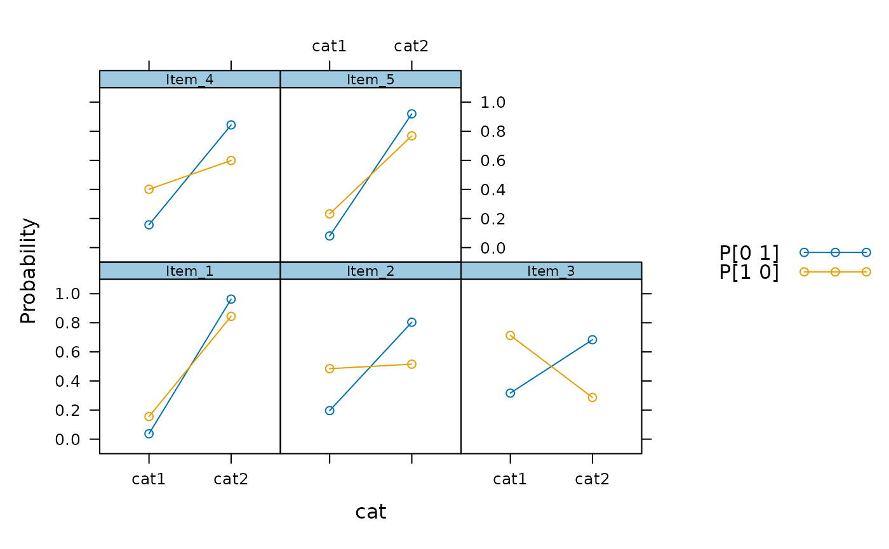
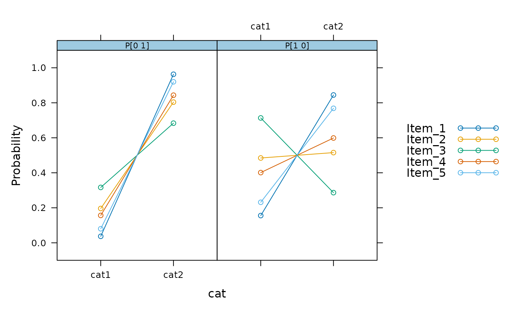
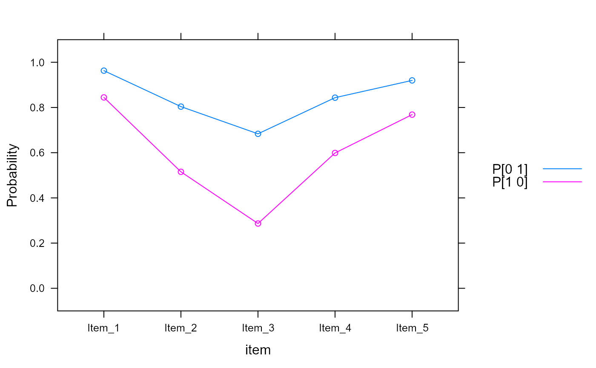
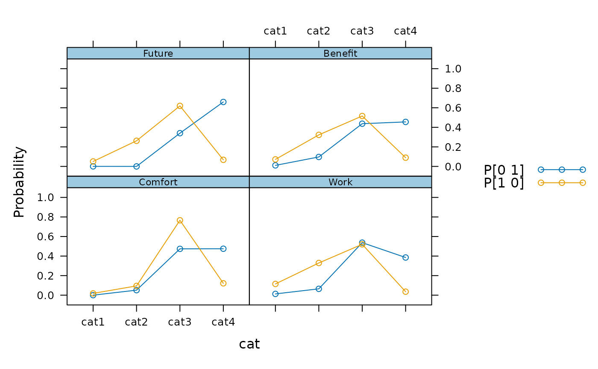
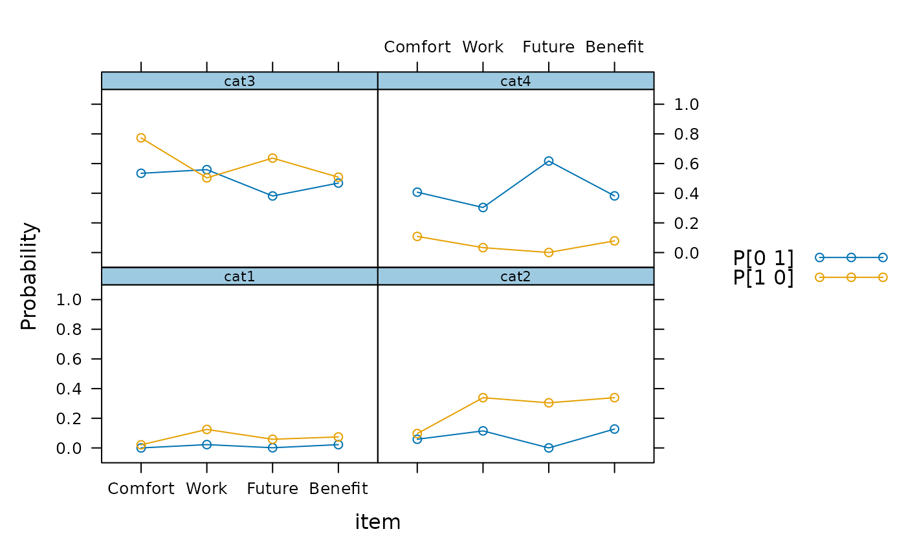

mdirt fits a variety of item response models with discrete latent variables.
These include, but are not limited to, latent class analysis, multidimensional latent
class models, multidimensional discrete latent class models, DINA/DINO models,
grade of measurement models, C-RUM, and so on. If response models are not defined explicitly
then customized models can defined using the createItem function.
mdirt( data, model, customTheta = NULL, structure = NULL, item.Q = NULL, nruns = 1, method = "EM", covdata = NULL, formula = NULL, itemtype = "lca", optimizer = "nlminb", return_max = TRUE, group = NULL, GenRandomPars = FALSE, verbose = TRUE, pars = NULL, technical = list(), ... )
| data | a |
|---|---|
| model | number of mutually exclusive classes to fit, or alternatively a more specific
|
| customTheta | input passed to |
| structure | an R formula allowing the profile probability patterns (i.e., the structural component of
the model) to be fitted according to a log-linear model. When |
| item.Q | a list of item-level Q-matrices indicating how the respective categories should be
modeled by the underlying attributes. Each matrix must represent a \(K_i \times A\) matrix,
where \(K_i\) represents the number of categories for the ith item, and \(A\) is the number
of attributes included in the |
| nruns | a numeric value indicating how many times the model should be fit to the data
when using random starting values. If greater than 1, |
| method | estimation method. Can be 'EM' or 'BL' (see |
| covdata | a data.frame of data used for latent regression models |
| formula | an R formula (or list of formulas) indicating how the latent traits
can be regressed using external covariates in |
| itemtype | a vector indicating the itemtype associated with each item.
For discrete models this is limited to only 'lca' or items defined using a
|
| optimizer | optimizer used for the M-step, set to |
| return_max | logical; when |
| group | a factor variable indicating group membership used for multiple group analyses |
| GenRandomPars | logical; use random starting values |
| verbose | logical; turn on messages to the R console |
| pars | used for modifying starting values; see |
| technical | list of lower-level inputs. See |
| ... | additional arguments to be passed to the estimation engine. See |
Posterior classification accuracy for each response pattern may be obtained
via the fscores function. The summary() function will display
the category probability values given the class membership, which can also
be displayed graphically with plot(), while coef()
displays the raw coefficient values (and their standard errors, if estimated). Finally,
anova() is used to compare nested models, while
M2 and itemfit may be used for model fitting purposes.
The latent class IRT model with two latent classes has the form
$$P(x = k|\theta_1, \theta_2, a1, a2) = \frac{exp(a1 \theta_1 + a2 \theta_2)}{ \sum_j^K exp(a1 \theta_1 + a2 \theta_2)}$$
where the \(\theta\) values generally take on discrete points (such as 0 or 1). For proper identification, the first category slope parameters (\(a1\) and \(a2\)) are never freely estimated. Alternatively, supplying a different grid of \(\theta\) values will allow the estimation of similar models (multidimensional discrete models, grade of membership, etc.). See the examples below.
When the item.Q for is utilized, the above equation can be understood as
$$P(x = k|\theta_1, \theta_2, a1, a2) = \frac{exp(a1 \theta_1 Q_{j1} + a2 \theta_2 Q_{j2})}{ \sum_j^K exp(a1 \theta_1 Q_{j1} + a2 \theta_2 Q_{j2})}$$
where by construction Q is a \(K_i \times A\) matrix indicating whether the category should
be modeled according to the latent class structure. For the standard latent class model, the Q-matrix
has as many rows as categories, as many columns as the number of classes/attributes modeled,
and consist of 0's in the first row and 1's elsewhere. This of course can be over-written by passing
an alternative item.Q definition for each respective item.
Chalmers, R., P. (2012). mirt: A Multidimensional Item Response Theory Package for the R Environment. Journal of Statistical Software, 48(6), 1-29.
Proctor, C. H. (1970). A probabilistic formulation and statistical analysis for Guttman scaling. Psychometrika, 35, 73-78. doi: 10.18637/jss.v048.i06
thetaComb, fscores, mirt.model, M2,
itemfit, boot.mirt, mirtCluster,
wald, coef-method, summary-method,
anova-method, residuals-method
Phil Chalmers rphilip.chalmers@gmail.com
#> #> Call: #> mdirt(data = dat, model = 2) #> #> Latent class model with 2 classes and 2 profiles. #> Converged within 1e-04 tolerance after 363 EM iterations. #> mirt version: 1.32.10 #> M-step optimizer: nlminb #> EM acceleration: Ramsay #> Latent density type: discrete #> #> Log-likelihood = -2467.408 #> Estimated parameters: 11 #> AIC = 4956.816; AICc = 4957.084 #> BIC = 5010.802; SABIC = 4975.865 #> G2 (20) = 22.74, p = 0.3018, RMSEA = 0.012# \donttest{ (mod3 <- mdirt(dat, 3))#> #> Call: #> mdirt(data = dat, model = 3) #> #> Latent class model with 3 classes and 3 profiles. #> FAILED TO CONVERGE within 1e-04 tolerance after 500 EM iterations. #> mirt version: 1.32.10 #> M-step optimizer: nlminb #> EM acceleration: Ramsay #> Latent density type: discrete #> #> Log-likelihood = -2465.249 #> Estimated parameters: 17 #> AIC = 4964.498; AICc = 4965.121 #> BIC = 5047.93; SABIC = 4993.937 #> G2 (14) = 18.42, p = 0.1883, RMSEA = 0.018#> $Item_1 #> category_1 category_2 #> P[1 0] 0.156 0.844 #> P[0 1] 0.037 0.963 #> #> $Item_2 #> category_1 category_2 #> P[1 0] 0.485 0.515 #> P[0 1] 0.196 0.804 #> #> $Item_3 #> category_1 category_2 #> P[1 0] 0.713 0.287 #> P[0 1] 0.317 0.683 #> #> $Item_4 #> category_1 category_2 #> P[1 0] 0.401 0.599 #> P[0 1] 0.157 0.843 #> #> $Item_5 #> category_1 category_2 #> P[1 0] 0.232 0.768 #> P[0 1] 0.080 0.920 #> #> $Class.Probability #> F1 F2 prob #> Profile_1 1 0 0.329 #> Profile_2 0 1 0.671 #>#> Item_1 Item_2 Item_3 Item_4 Item_5 #> Item_1 NA 0.010 0.020 -0.011 -0.018 #> Item_2 0.109 NA 0.003 -0.018 0.022 #> Item_3 0.412 0.009 NA 0.008 -0.026 #> Item_4 0.132 0.313 0.060 NA 0.040 #> Item_5 0.331 0.487 0.680 1.566 NA#> Item_1 Item_2 Item_3 Item_4 Item_5 freq exp res #> 1 0 0 0 0 0 3 1.662 1.038 #> 2 0 0 0 0 1 6 5.673 0.137 #> 3 0 0 0 1 0 2 2.556 -0.348 #> 4 0 0 0 1 1 11 9.333 0.546 #> 5 0 0 1 0 0 1 0.702 0.356 #> 6 0 0 1 0 1 1 2.670 -1.022 #> 7 0 0 1 1 0 3 1.211 1.626 #> 8 0 0 1 1 1 4 5.855 -0.767 #> 9 0 1 0 0 0 1 1.826 -0.611 #> 10 0 1 0 0 1 8 6.708 0.499 #> 11 0 1 0 1 1 16 13.561 0.662 #> 12 0 1 1 0 1 3 4.297 -0.625 #> 13 0 1 1 1 0 2 1.972 0.020 #> 14 0 1 1 1 1 15 14.075 0.247 #> 15 1 0 0 0 0 10 9.422 0.188 #> 16 1 0 0 0 1 29 35.372 -1.071 #> 17 1 0 0 1 0 14 16.027 -0.506 #> 18 1 0 0 1 1 81 75.302 0.657 #> 19 1 0 1 0 0 3 4.672 -0.773 #> 20 1 0 1 0 1 28 24.369 0.736 #> 21 1 0 1 1 0 15 11.213 1.131 #> 22 1 0 1 1 1 80 84.968 -0.539 #> 23 1 1 0 0 0 16 11.551 1.309 #> 24 1 1 0 0 1 56 55.154 0.114 #> 25 1 1 0 1 0 21 25.287 -0.853 #> 26 1 1 0 1 1 173 174.541 -0.117 #> 27 1 1 1 0 0 11 8.273 0.948 #> 28 1 1 1 0 1 61 63.783 -0.348 #> 29 1 1 1 1 0 28 29.723 -0.316 #> 30 1 1 1 1 1 298 294.334 0.214#> #> Model 1: mdirt(data = dat, model = 2) #> Model 2: mdirt(data = dat, model = 3) #>#> AIC AICc SABIC HQ BIC logLik X2 df p #> 1 4956.816 4957.084 4975.865 4977.335 5010.802 -2467.408 NaN NaN NaN #> 2 4964.498 4965.121 4993.937 4996.208 5047.930 -2465.249 4.318 6 0.634#> M2 df p RMSEA RMSEA_5 RMSEA_95 #> stats 4.603509 5 0.4661549 0 0 0.04215944#> item S_X2 df.S_X2 RMSEA.S_X2 p.S_X2 #> 1 Item_1 0.433 2 0 0.805 #> 2 Item_2 1.702 2 0 0.427 #> 3 Item_3 0.747 1 0 0.387 #> 4 Item_4 0.184 2 0 0.912 #> 5 Item_5 0.145 2 0 0.930#> $Comfort #> category_1 category_2 category_3 category_4 #> P[1 0] 0.021 0.097 0.773 0.109 #> P[0 1] 0.000 0.059 0.534 0.407 #> #> $Work #> category_1 category_2 category_3 category_4 #> P[1 0] 0.125 0.339 0.504 0.033 #> P[0 1] 0.022 0.115 0.559 0.304 #> #> $Future #> category_1 category_2 category_3 category_4 #> P[1 0] 0.059 0.304 0.637 0.001 #> P[0 1] 0.001 0.000 0.381 0.617 #> #> $Benefit #> category_1 category_2 category_3 category_4 #> P[1 0] 0.074 0.339 0.508 0.079 #> P[0 1] 0.022 0.127 0.468 0.382 #> #> $Class.Probability #> F1 F2 prob #> Profile_1 1 0 0.604 #> Profile_2 0 1 0.396 #>#> Item_1 Item_2 Item_3 Item_4 Item_5 Class_1 Class_2 #> [1,] 0 0 0 0 0 0.98832539 0.01167461 #> [2,] 0 0 0 0 1 0.96080421 0.03919579 #> [3,] 0 0 0 1 0 0.95911420 0.04088580 #> [4,] 0 0 0 1 1 0.87167305 0.12832695 #> [5,] 0 0 1 0 0 0.94030147 0.05969853 #> [6,] 0 0 1 0 1 0.82016986 0.17983014 #> [7,] 0 0 1 1 0 0.81359256 0.18640744 #> [8,] 0 0 1 1 1 0.55826672 0.44173328 #> [9,] 0 1 0 0 0 0.95646627 0.04353373 #> [10,] 0 1 0 0 1 0.86416411 0.13583589 #> [11,] 0 1 0 1 1 0.63805843 0.36194157 #> [12,] 0 1 1 0 1 0.54205358 0.45794642 #> [13,] 0 1 1 1 0 0.53111944 0.46888056 #> [14,] 0 1 1 1 1 0.24698538 0.75301462 #> [15,] 1 0 0 0 0 0.94648118 0.05351882 #> [16,] 1 0 0 0 1 0.83662439 0.16337561 #> [17,] 1 0 0 1 0 0.83052457 0.16947543 #> [18,] 1 0 0 1 1 0.58660671 0.41339329 #> [19,] 1 0 1 0 0 0.76692257 0.23307743 #> [20,] 1 0 1 0 1 0.48790756 0.51209244 #> [21,] 1 0 1 1 0 0.47692814 0.52307186 #> [22,] 1 0 1 1 1 0.20887048 0.79112952 #> [23,] 1 1 0 0 0 0.82110202 0.17889798 #> [24,] 1 1 0 0 1 0.57063375 0.42936625 #> [25,] 1 1 0 1 0 0.55982786 0.44017214 #> [26,] 1 1 0 1 1 0.26915168 0.73084832 #> [27,] 1 1 1 0 0 0.46061404 0.53938596 #> [28,] 1 1 1 0 1 0.19825043 0.80174957 #> [29,] 1 1 1 1 0 0.19135355 0.80864645 #> [30,] 1 1 1 1 1 0.06412585 0.93587415# classify individuals either with the largest posterior probability..... fs <- fscores(mod2) head(fs)#> Class_1 Class_2 #> 1 0.9883254 0.01167461 #> 2 0.9883254 0.01167461 #> 3 0.9883254 0.01167461 #> 4 0.9608042 0.03919579 #> 5 0.9608042 0.03919579 #> 6 0.9608042 0.03919579#> class_max #> 1 2 #> 291 709# ... or by probability sampling (i.e., plausible value draws) class_prob <- apply(fs, 1, function(x) sample(1:2, 1, prob=x)) table(class_prob)#> class_prob #> 1 2 #> 314 686# plausible value imputations for stochastic classification in both classes pvs <- fscores(mod2, plausible.draws=10) tabs <- lapply(pvs, function(x) apply(x, 2, table)) tabs[[1]]#> [,1] [,2] #> 0 687 343 #> 1 313 657#>mod <- mdirt(dat, 2, nruns=10)#> Model log-likelihoods: #> [1] -2467.408 -2467.408 -2467.408 -2467.408 -2467.408 -2467.408 -2467.408 #> [8] -2467.408 -2467.408 -2467.408#-------------------------- # Grade of measurement model # define a custom Theta grid for including a 'fuzzy' class membership (Theta <- matrix(c(1, 0, .5, .5, 0, 1), nrow=3 , ncol=2, byrow=TRUE))#> [,1] [,2] #> [1,] 1.0 0.0 #> [2,] 0.5 0.5 #> [3,] 0.0 1.0(mod_gom <- mdirt(dat, 2, customTheta = Theta))#> #> Call: #> mdirt(data = dat, model = 2, customTheta = Theta) #> #> Latent class model with 2 classes and 3 profiles. #> FAILED TO CONVERGE within 1e-04 tolerance after 500 EM iterations. #> mirt version: 1.32.10 #> M-step optimizer: nlminb #> EM acceleration: Ramsay #> Latent density type: discrete #> #> Log-likelihood = -2466.602 #> Estimated parameters: 12 #> AIC = 4957.205; AICc = 4957.521 #> BIC = 5016.098; SABIC = 4977.985 #> G2 (19) = 21.13, p = 0.3298, RMSEA = 0.011#> $Item_1 #> category_1 category_2 #> P[1 0] 0.322 0.678 #> P[0.5 0.5] 0.102 0.898 #> P[0 1] 0.026 0.974 #> #> $Item_2 #> category_1 category_2 #> P[1 0] 0.692 0.308 #> P[0.5 0.5] 0.386 0.614 #> P[0 1] 0.150 0.850 #> #> $Item_3 #> category_1 category_2 #> P[1 0] 0.866 0.134 #> P[0.5 0.5] 0.592 0.408 #> P[0 1] 0.247 0.753 #> #> $Item_4 #> category_1 category_2 #> P[1 0] 0.603 0.397 #> P[0.5 0.5] 0.313 0.687 #> P[0 1] 0.120 0.880 #> #> $Item_5 #> category_1 category_2 #> P[1 0] 0.398 0.602 #> P[0.5 0.5] 0.171 0.829 #> P[0 1] 0.061 0.939 #> #> $Class.Probability #> F1 F2 prob #> Profile_1 1.0 0.0 0.037 #> Profile_2 0.5 0.5 0.513 #> Profile_3 0.0 1.0 0.450 #>#----------------- # Multidimensional discrete latent class model dat <- key2binary(SAT12, key = c(1,4,5,2,3,1,2,1,3,1,2,4,2,1,5,3,4,4,1,4,3,3,4,1,3,5,1,3,1,5,4,5)) # define Theta grid for three latent classes (Theta <- thetaComb(0:1, 3))#> [,1] [,2] [,3] #> [1,] 0 0 0 #> [2,] 1 0 0 #> [3,] 0 1 0 #> [4,] 1 1 0 #> [5,] 0 0 1 #> [6,] 1 0 1 #> [7,] 0 1 1 #> [8,] 1 1 1(mod_discrete <- mdirt(dat, 3, customTheta = Theta))#> #> Call: #> mdirt(data = dat, model = 3, customTheta = Theta) #> #> Latent class model with 3 classes and 8 profiles. #> Converged within 1e-04 tolerance after 132 EM iterations. #> mirt version: 1.32.10 #> M-step optimizer: nlminb #> EM acceleration: Ramsay #> Latent density type: discrete #> #> Log-likelihood = -9429.725 #> Estimated parameters: 103 #> AIC = 19065.45; AICc = 19108.64 #> BIC = 19518.33; SABIC = 19191.34 #> G2 (4294967192) = 11189.73, p = 1, RMSEA = 0#> $Item.1 #> category_1 category_2 #> P[0 0 0] 0.500 0.500 #> P[1 0 0] 0.868 0.132 #> P[0 1 0] 0.460 0.540 #> P[1 1 0] 0.849 0.151 #> P[0 0 1] 0.341 0.659 #> P[1 0 1] 0.773 0.227 #> P[0 1 1] 0.306 0.694 #> P[1 1 1] 0.744 0.256 #> #> $Item.2 #> category_1 category_2 #> P[0 0 0] 0.500 0.500 #> P[1 0 0] 0.945 0.055 #> P[0 1 0] 0.165 0.835 #> P[1 1 0] 0.774 0.226 #> P[0 0 1] 0.072 0.928 #> P[1 0 1] 0.574 0.426 #> P[0 1 1] 0.015 0.985 #> P[1 1 1] 0.211 0.789 #> #> $Item.3 #> category_1 category_2 #> P[0 0 0] 0.500 0.500 #> P[1 0 0] 0.929 0.071 #> P[0 1 0] 0.337 0.663 #> P[1 1 0] 0.870 0.130 #> P[0 0 1] 0.271 0.729 #> P[1 0 1] 0.830 0.170 #> P[0 1 1] 0.159 0.841 #> P[1 1 1] 0.713 0.287 #> #> $Item.4 #> category_1 category_2 #> P[0 0 0] 0.500 0.500 #> P[1 0 0] 0.844 0.156 #> P[0 1 0] 0.223 0.777 #> P[1 1 0] 0.609 0.391 #> P[0 0 1] 0.428 0.572 #> P[1 0 1] 0.802 0.198 #> P[0 1 1] 0.177 0.823 #> P[1 1 1] 0.538 0.462 #> #> $Item.5 #> category_1 category_2 #> P[0 0 0] 0.500 0.500 #> P[1 0 0] 0.837 0.163 #> P[0 1 0] 0.263 0.737 #> P[1 1 0] 0.647 0.353 #> P[0 0 1] 0.137 0.863 #> P[1 0 1] 0.449 0.551 #> P[0 1 1] 0.054 0.946 #> P[1 1 1] 0.225 0.775 #> #> $Item.6 #> category_1 category_2 #> P[0 0 0] 0.500 0.500 #> P[1 0 0] 0.943 0.057 #> P[0 1 0] 0.334 0.666 #> P[1 1 0] 0.893 0.107 #> P[0 0 1] 0.473 0.527 #> P[1 0 1] 0.937 0.063 #> P[0 1 1] 0.310 0.690 #> P[1 1 1] 0.882 0.118 #> #> $Item.7 #> category_1 category_2 #> P[0 0 0] 0.500 0.500 #> P[1 0 0] 0.766 0.234 #> P[0 1 0] 0.283 0.717 #> P[1 1 0] 0.563 0.437 #> P[0 0 1] 0.088 0.912 #> P[1 0 1] 0.240 0.760 #> P[0 1 1] 0.037 0.963 #> P[1 1 1] 0.111 0.889 #> #> $Item.8 #> category_1 category_2 #> P[0 0 0] 0.500 0.500 #> P[1 0 0] 0.866 0.134 #> P[0 1 0] 0.573 0.427 #> P[1 1 0] 0.897 0.103 #> P[0 0 1] 0.422 0.578 #> P[1 0 1] 0.825 0.175 #> P[0 1 1] 0.495 0.505 #> P[1 1 1] 0.864 0.136 #> #> $Item.9 #> category_1 category_2 #> P[0 0 0] 0.500 0.500 #> P[1 0 0] 0.457 0.543 #> P[0 1 0] 0.252 0.748 #> P[1 1 0] 0.221 0.779 #> P[0 0 1] 0.145 0.855 #> P[1 0 1] 0.124 0.876 #> P[0 1 1] 0.054 0.946 #> P[1 1 1] 0.046 0.954 #> #> $Item.10 #> category_1 category_2 #> P[0 0 0] 0.500 0.500 #> P[1 0 0] 0.904 0.096 #> P[0 1 0] 0.299 0.701 #> P[1 1 0] 0.800 0.200 #> P[0 0 1] 0.189 0.811 #> P[1 0 1] 0.686 0.314 #> P[0 1 1] 0.090 0.910 #> P[1 1 1] 0.482 0.518 #> #> $Item.11 #> category_1 category_2 #> P[0 0 0] 0.500 0.500 #> P[1 0 0] 0.987 0.013 #> P[0 1 0] 0.001 0.999 #> P[1 1 0] 0.039 0.961 #> P[0 0 1] 0.000 1.000 #> P[1 0 1] 0.014 0.986 #> P[0 1 1] 0.000 1.000 #> P[1 1 1] 0.000 1.000 #> #> $Item.12 #> category_1 category_2 #> P[0 0 0] 0.500 0.500 #> P[1 0 0] 0.621 0.379 #> P[0 1 0] 0.434 0.566 #> P[1 1 0] 0.557 0.443 #> P[0 0 1] 0.523 0.477 #> P[1 0 1] 0.643 0.357 #> P[0 1 1] 0.457 0.543 #> P[1 1 1] 0.580 0.420 #> #> $Item.13 #> category_1 category_2 #> P[0 0 0] 0.500 0.500 #> P[1 0 0] 0.849 0.151 #> P[0 1 0] 0.315 0.685 #> P[1 1 0] 0.721 0.279 #> P[0 0 1] 0.087 0.913 #> P[1 0 1] 0.348 0.652 #> P[0 1 1] 0.042 0.958 #> P[1 1 1] 0.198 0.802 #> #> $Item.14 #> category_1 category_2 #> P[0 0 0] 0.500 0.500 #> P[1 0 0] 0.857 0.143 #> P[0 1 0] 0.108 0.892 #> P[1 1 0] 0.422 0.578 #> P[0 0 1] 0.112 0.888 #> P[1 0 1] 0.432 0.568 #> P[0 1 1] 0.015 0.985 #> P[1 1 1] 0.085 0.915 #> #> $Item.15 #> category_1 category_2 #> P[0 0 0] 0.500 0.500 #> P[1 0 0] 0.742 0.258 #> P[0 1 0] 0.289 0.711 #> P[1 1 0] 0.539 0.461 #> P[0 0 1] 0.054 0.946 #> P[1 0 1] 0.141 0.859 #> P[0 1 1] 0.023 0.977 #> P[1 1 1] 0.062 0.938 #> #> $Item.16 #> category_1 category_2 #> P[0 0 0] 0.500 0.500 #> P[1 0 0] 0.846 0.154 #> P[0 1 0] 0.298 0.702 #> P[1 1 0] 0.699 0.301 #> P[0 0 1] 0.315 0.685 #> P[1 0 1] 0.716 0.284 #> P[0 1 1] 0.164 0.836 #> P[1 1 1] 0.517 0.483 #> #> $Item.17 #> category_1 category_2 #> P[0 0 0] 0.500 0.500 #> P[1 0 0] 0.694 0.306 #> P[0 1 0] 0.062 0.938 #> P[1 1 0] 0.130 0.870 #> P[0 0 1] 0.008 0.992 #> P[1 0 1] 0.018 0.982 #> P[0 1 1] 0.001 0.999 #> P[1 1 1] 0.001 0.999 #> #> $Item.18 #> category_1 category_2 #> P[0 0 0] 0.500 0.500 #> P[1 0 0] 0.977 0.023 #> P[0 1 0] 0.217 0.783 #> P[1 1 0] 0.922 0.078 #> P[0 0 1] 0.090 0.910 #> P[1 0 1] 0.808 0.192 #> P[0 1 1] 0.027 0.973 #> P[1 1 1] 0.539 0.461 #> #> $Item.19 #> category_1 category_2 #> P[0 0 0] 0.500 0.500 #> P[1 0 0] 0.830 0.170 #> P[0 1 0] 0.291 0.709 #> P[1 1 0] 0.668 0.332 #> P[0 0 1] 0.200 0.800 #> P[1 0 1] 0.550 0.450 #> P[0 1 1] 0.093 0.907 #> P[1 1 1] 0.334 0.666 #> #> $Item.20 #> category_1 category_2 #> P[0 0 0] 0.500 0.500 #> P[1 0 0] 0.918 0.082 #> P[0 1 0] 0.038 0.962 #> P[1 1 0] 0.305 0.695 #> P[0 0 1] 0.017 0.983 #> P[1 0 1] 0.164 0.836 #> P[0 1 1] 0.001 0.999 #> P[1 1 1] 0.008 0.992 #> #> $Item.21 #> category_1 category_2 #> P[0 0 0] 0.500 0.500 #> P[1 0 0] 0.434 0.566 #> P[0 1 0] 0.223 0.777 #> P[1 1 0] 0.180 0.820 #> P[0 0 1] 0.110 0.890 #> P[1 0 1] 0.086 0.914 #> P[0 1 1] 0.034 0.966 #> P[1 1 1] 0.026 0.974 #> #> $Item.22 #> category_1 category_2 #> P[0 0 0] 0.500 0.500 #> P[1 0 0] 0.996 0.004 #> P[0 1 0] 0.001 0.999 #> P[1 1 0] 0.209 0.791 #> P[0 0 1] 0.000 1.000 #> P[1 0 1] 0.055 0.945 #> P[0 1 1] 0.000 1.000 #> P[1 1 1] 0.000 1.000 #> #> $Item.23 #> category_1 category_2 #> P[0 0 0] 0.500 0.500 #> P[1 0 0] 0.864 0.136 #> P[0 1 0] 0.284 0.716 #> P[1 1 0] 0.717 0.283 #> P[0 0 1] 0.422 0.578 #> P[1 0 1] 0.823 0.177 #> P[0 1 1] 0.225 0.775 #> P[1 1 1] 0.649 0.351 #> #> $Item.24 #> category_1 category_2 #> P[0 0 0] 0.500 0.500 #> P[1 0 0] 0.824 0.176 #> P[0 1 0] 0.301 0.699 #> P[1 1 0] 0.668 0.332 #> P[0 0 1] 0.068 0.932 #> P[1 0 1] 0.256 0.744 #> P[0 1 1] 0.031 0.969 #> P[1 1 1] 0.129 0.871 #> #> $Item.25 #> category_1 category_2 #> P[0 0 0] 0.500 0.500 #> P[1 0 0] 0.869 0.131 #> P[0 1 0] 0.351 0.649 #> P[1 1 0] 0.782 0.218 #> P[0 0 1] 0.280 0.720 #> P[1 0 1] 0.721 0.279 #> P[0 1 1] 0.174 0.826 #> P[1 1 1] 0.583 0.417 #> #> $Item.26 #> category_1 category_2 #> P[0 0 0] 0.500 0.500 #> P[1 0 0] 0.967 0.033 #> P[0 1 0] 0.140 0.860 #> P[1 1 0] 0.825 0.175 #> P[0 0 1] 0.093 0.907 #> P[1 0 1] 0.748 0.252 #> P[0 1 1] 0.016 0.984 #> P[1 1 1] 0.326 0.674 #> #> $Item.27 #> category_1 category_2 #> P[0 0 0] 0.500 0.500 #> P[1 0 0] 0.838 0.162 #> P[0 1 0] 0.137 0.863 #> P[1 1 0] 0.451 0.549 #> P[0 0 1] 0.023 0.977 #> P[1 0 1] 0.109 0.891 #> P[0 1 1] 0.004 0.996 #> P[1 1 1] 0.019 0.981 #> #> $Item.28 #> category_1 category_2 #> P[0 0 0] 0.500 0.500 #> P[1 0 0] 0.888 0.112 #> P[0 1 0] 0.222 0.778 #> P[1 1 0] 0.693 0.307 #> P[0 0 1] 0.163 0.837 #> P[1 0 1] 0.606 0.394 #> P[0 1 1] 0.053 0.947 #> P[1 1 1] 0.305 0.695 #> #> $Item.29 #> category_1 category_2 #> P[0 0 0] 0.500 0.500 #> P[1 0 0] 0.893 0.107 #> P[0 1 0] 0.292 0.708 #> P[1 1 0] 0.774 0.226 #> P[0 0 1] 0.323 0.677 #> P[1 0 1] 0.799 0.201 #> P[0 1 1] 0.164 0.836 #> P[1 1 1] 0.620 0.380 #> #> $Item.30 #> category_1 category_2 #> P[0 0 0] 0.500 0.500 #> P[1 0 0] 0.698 0.302 #> P[0 1 0] 0.455 0.545 #> P[1 1 0] 0.659 0.341 #> P[0 0 1] 0.378 0.622 #> P[1 0 1] 0.584 0.416 #> P[0 1 1] 0.337 0.663 #> P[1 1 1] 0.540 0.460 #> #> $Item.31 #> category_1 category_2 #> P[0 0 0] 0.500 0.500 #> P[1 0 0] 0.977 0.023 #> P[0 1 0] 0.024 0.976 #> P[1 1 0] 0.509 0.491 #> P[0 0 1] 0.005 0.995 #> P[1 0 1] 0.166 0.834 #> P[0 1 1] 0.000 1.000 #> P[1 1 1] 0.005 0.995 #> #> $Item.32 #> category_1 category_2 #> P[0 0 0] 0.500 0.500 #> P[1 0 0] 0.729 0.271 #> P[0 1 0] 0.568 0.432 #> P[1 1 0] 0.779 0.221 #> P[0 0 1] 0.702 0.298 #> P[1 0 1] 0.863 0.137 #> P[0 1 1] 0.755 0.245 #> P[1 1 1] 0.892 0.108 #> #> $Class.Probability #> F1 F2 F3 prob #> Profile_1 0 0 0 0.000 #> Profile_2 1 0 0 0.004 #> Profile_3 0 1 0 0.002 #> Profile_4 1 1 0 0.194 #> Profile_5 0 0 1 0.084 #> Profile_6 1 0 1 0.367 #> Profile_7 0 1 1 0.058 #> Profile_8 1 1 1 0.290 #># Located latent class model model <- mirt.model('C1 = 1-32 C2 = 1-32 C3 = 1-32 CONSTRAIN = (1-32, a1), (1-32, a2), (1-32, a3)') (mod_located <- mdirt(dat, model, customTheta = diag(3)))#> #> Call: #> mdirt(data = dat, model = model, customTheta = diag(3)) #> #> Latent class model with 3 classes and 3 profiles. #> Converged within 1e-04 tolerance after 364 EM iterations. #> mirt version: 1.32.10 #> M-step optimizer: nlminb #> EM acceleration: Ramsay #> Latent density type: discrete #> #> Log-likelihood = -12771.08 #> Estimated parameters: 98 #> AIC = 25552.15; AICc = 25552.25 #> BIC = 25574.14; SABIC = 25558.26 #> G2 (4294967290) = 17872.43, p = 1, RMSEA = 0#> $Item.1 #> category_1 category_2 #> P[1 0 0] 0.578 0.422 #> P[0 1 0] 0.410 0.590 #> P[0 0 1] 0.190 0.810 #> #> $Item.2 #> category_1 category_2 #> P[1 0 0] 0.578 0.422 #> P[0 1 0] 0.410 0.590 #> P[0 0 1] 0.190 0.810 #> #> $Item.3 #> category_1 category_2 #> P[1 0 0] 0.578 0.422 #> P[0 1 0] 0.410 0.590 #> P[0 0 1] 0.190 0.810 #> #> $Item.4 #> category_1 category_2 #> P[1 0 0] 0.578 0.422 #> P[0 1 0] 0.410 0.590 #> P[0 0 1] 0.190 0.810 #> #> $Item.5 #> category_1 category_2 #> P[1 0 0] 0.578 0.422 #> P[0 1 0] 0.410 0.590 #> P[0 0 1] 0.190 0.810 #> #> $Item.6 #> category_1 category_2 #> P[1 0 0] 0.578 0.422 #> P[0 1 0] 0.410 0.590 #> P[0 0 1] 0.190 0.810 #> #> $Item.7 #> category_1 category_2 #> P[1 0 0] 0.578 0.422 #> P[0 1 0] 0.410 0.590 #> P[0 0 1] 0.190 0.810 #> #> $Item.8 #> category_1 category_2 #> P[1 0 0] 0.578 0.422 #> P[0 1 0] 0.410 0.590 #> P[0 0 1] 0.190 0.810 #> #> $Item.9 #> category_1 category_2 #> P[1 0 0] 0.578 0.422 #> P[0 1 0] 0.410 0.590 #> P[0 0 1] 0.190 0.810 #> #> $Item.10 #> category_1 category_2 #> P[1 0 0] 0.578 0.422 #> P[0 1 0] 0.410 0.590 #> P[0 0 1] 0.190 0.810 #> #> $Item.11 #> category_1 category_2 #> P[1 0 0] 0.578 0.422 #> P[0 1 0] 0.410 0.590 #> P[0 0 1] 0.190 0.810 #> #> $Item.12 #> category_1 category_2 #> P[1 0 0] 0.578 0.422 #> P[0 1 0] 0.410 0.590 #> P[0 0 1] 0.190 0.810 #> #> $Item.13 #> category_1 category_2 #> P[1 0 0] 0.578 0.422 #> P[0 1 0] 0.410 0.590 #> P[0 0 1] 0.190 0.810 #> #> $Item.14 #> category_1 category_2 #> P[1 0 0] 0.578 0.422 #> P[0 1 0] 0.410 0.590 #> P[0 0 1] 0.190 0.810 #> #> $Item.15 #> category_1 category_2 #> P[1 0 0] 0.578 0.422 #> P[0 1 0] 0.410 0.590 #> P[0 0 1] 0.190 0.810 #> #> $Item.16 #> category_1 category_2 #> P[1 0 0] 0.578 0.422 #> P[0 1 0] 0.410 0.590 #> P[0 0 1] 0.190 0.810 #> #> $Item.17 #> category_1 category_2 #> P[1 0 0] 0.578 0.422 #> P[0 1 0] 0.410 0.590 #> P[0 0 1] 0.190 0.810 #> #> $Item.18 #> category_1 category_2 #> P[1 0 0] 0.578 0.422 #> P[0 1 0] 0.410 0.590 #> P[0 0 1] 0.190 0.810 #> #> $Item.19 #> category_1 category_2 #> P[1 0 0] 0.578 0.422 #> P[0 1 0] 0.410 0.590 #> P[0 0 1] 0.190 0.810 #> #> $Item.20 #> category_1 category_2 #> P[1 0 0] 0.578 0.422 #> P[0 1 0] 0.410 0.590 #> P[0 0 1] 0.190 0.810 #> #> $Item.21 #> category_1 category_2 #> P[1 0 0] 0.578 0.422 #> P[0 1 0] 0.410 0.590 #> P[0 0 1] 0.190 0.810 #> #> $Item.22 #> category_1 category_2 #> P[1 0 0] 0.578 0.422 #> P[0 1 0] 0.410 0.590 #> P[0 0 1] 0.190 0.810 #> #> $Item.23 #> category_1 category_2 #> P[1 0 0] 0.578 0.422 #> P[0 1 0] 0.410 0.590 #> P[0 0 1] 0.190 0.810 #> #> $Item.24 #> category_1 category_2 #> P[1 0 0] 0.578 0.422 #> P[0 1 0] 0.410 0.590 #> P[0 0 1] 0.190 0.810 #> #> $Item.25 #> category_1 category_2 #> P[1 0 0] 0.578 0.422 #> P[0 1 0] 0.410 0.590 #> P[0 0 1] 0.190 0.810 #> #> $Item.26 #> category_1 category_2 #> P[1 0 0] 0.578 0.422 #> P[0 1 0] 0.410 0.590 #> P[0 0 1] 0.190 0.810 #> #> $Item.27 #> category_1 category_2 #> P[1 0 0] 0.578 0.422 #> P[0 1 0] 0.410 0.590 #> P[0 0 1] 0.190 0.810 #> #> $Item.28 #> category_1 category_2 #> P[1 0 0] 0.578 0.422 #> P[0 1 0] 0.410 0.590 #> P[0 0 1] 0.190 0.810 #> #> $Item.29 #> category_1 category_2 #> P[1 0 0] 0.578 0.422 #> P[0 1 0] 0.410 0.590 #> P[0 0 1] 0.190 0.810 #> #> $Item.30 #> category_1 category_2 #> P[1 0 0] 0.578 0.422 #> P[0 1 0] 0.410 0.590 #> P[0 0 1] 0.190 0.810 #> #> $Item.31 #> category_1 category_2 #> P[1 0 0] 0.578 0.422 #> P[0 1 0] 0.410 0.590 #> P[0 0 1] 0.190 0.810 #> #> $Item.32 #> category_1 category_2 #> P[1 0 0] 0.578 0.422 #> P[0 1 0] 0.410 0.590 #> P[0 0 1] 0.190 0.810 #> #> $Class.Probability #> C1 C2 C3 prob #> Profile_1 1 0 0 0.339 #> Profile_2 0 1 0 0.497 #> Profile_3 0 0 1 0.163 #>#----------------- ### DINA model example # generate some suitable data for a two dimensional DINA application # (first columns are intercepts) set.seed(1) Theta <- expand.table(matrix(c(1,0,0,0, 1,1,0,0, 1,0,1,0, 1,1,1,1), 4, 4, byrow=TRUE), freq = c(200,200,100,500)) a <- matrix(c(rnorm(15, -1.5, .5), rlnorm(5, .2, .3), numeric(15), rlnorm(5, .2, .3), numeric(15), rlnorm(5, .2, .3)), 15, 4) guess <- plogis(a[11:15,1]) # population guess slip <- 1 - plogis(rowSums(a[11:15,])) # population slip dat <- simdata(a, Theta=Theta, itemtype = 'lca') # first column is the intercept, 2nd and 3rd are attributes theta <- cbind(1, thetaComb(0:1, 2)) theta <- cbind(theta, theta[,2] * theta[,3]) #DINA interaction of main attributes model <- mirt.model('Intercept = 1-15 A1 = 1-5 A2 = 6-10 A1A2 = 11-15') # last 5 items are DINA (first 10 are unidimensional C-RUMs) DINA <- mdirt(dat, model, customTheta = theta) coef(DINA, simplify=TRUE)#> $items #> a1 a2 a3 a4 #> Item_1 -0.026 -0.075 0.000 0.000 #> Item_2 0.599 -1.046 0.000 0.000 #> Item_3 -0.456 0.533 0.000 0.000 #> Item_4 0.219 -0.319 0.000 0.000 #> Item_5 0.215 -0.319 0.000 0.000 #> Item_6 -0.090 0.000 0.267 0.000 #> Item_7 -0.752 0.000 1.170 0.000 #> Item_8 -0.272 0.000 0.224 0.000 #> Item_9 -1.045 0.000 1.426 0.000 #> Item_10 0.436 0.000 -0.631 0.000 #> Item_11 0.502 0.000 0.000 -0.758 #> Item_12 0.225 0.000 0.000 -0.479 #> Item_13 -0.119 0.000 0.000 0.140 #> Item_14 -0.449 0.000 0.000 0.840 #> Item_15 -0.484 0.000 0.000 0.836 #> #> $group.intercepts #> c1 c2 c3 #> par -1.236 -1.637 -1.226 #>#> $Item_1 #> category_1 category_2 #> P[1 0 0 0] 0.506 0.494 #> P[1 1 0 0] 0.525 0.475 #> P[1 0 1 0] 0.506 0.494 #> P[1 1 1 1] 0.525 0.475 #> #> $Item_2 #> category_1 category_2 #> P[1 0 0 0] 0.354 0.646 #> P[1 1 0 0] 0.610 0.390 #> P[1 0 1 0] 0.354 0.646 #> P[1 1 1 1] 0.610 0.390 #> #> $Item_3 #> category_1 category_2 #> P[1 0 0 0] 0.612 0.388 #> P[1 1 0 0] 0.481 0.519 #> P[1 0 1 0] 0.612 0.388 #> P[1 1 1 1] 0.481 0.519 #> #> $Item_4 #> category_1 category_2 #> P[1 0 0 0] 0.446 0.554 #> P[1 1 0 0] 0.525 0.475 #> P[1 0 1 0] 0.446 0.554 #> P[1 1 1 1] 0.525 0.475 #> #> $Item_5 #> category_1 category_2 #> P[1 0 0 0] 0.447 0.553 #> P[1 1 0 0] 0.526 0.474 #> P[1 0 1 0] 0.447 0.553 #> P[1 1 1 1] 0.526 0.474 #> #> $Item_6 #> category_1 category_2 #> P[1 0 0 0] 0.522 0.478 #> P[1 1 0 0] 0.522 0.478 #> P[1 0 1 0] 0.456 0.544 #> P[1 1 1 1] 0.456 0.544 #> #> $Item_7 #> category_1 category_2 #> P[1 0 0 0] 0.680 0.320 #> P[1 1 0 0] 0.680 0.320 #> P[1 0 1 0] 0.397 0.603 #> P[1 1 1 1] 0.397 0.603 #> #> $Item_8 #> category_1 category_2 #> P[1 0 0 0] 0.568 0.432 #> P[1 1 0 0] 0.568 0.432 #> P[1 0 1 0] 0.512 0.488 #> P[1 1 1 1] 0.512 0.488 #> #> $Item_9 #> category_1 category_2 #> P[1 0 0 0] 0.740 0.260 #> P[1 1 0 0] 0.740 0.260 #> P[1 0 1 0] 0.406 0.594 #> P[1 1 1 1] 0.406 0.594 #> #> $Item_10 #> category_1 category_2 #> P[1 0 0 0] 0.393 0.607 #> P[1 1 0 0] 0.393 0.607 #> P[1 0 1 0] 0.549 0.451 #> P[1 1 1 1] 0.549 0.451 #> #> $Item_11 #> category_1 category_2 #> P[1 0 0 0] 0.377 0.623 #> P[1 1 0 0] 0.377 0.623 #> P[1 0 1 0] 0.377 0.623 #> P[1 1 1 1] 0.564 0.436 #> #> $Item_12 #> category_1 category_2 #> P[1 0 0 0] 0.444 0.556 #> P[1 1 0 0] 0.444 0.556 #> P[1 0 1 0] 0.444 0.556 #> P[1 1 1 1] 0.563 0.437 #> #> $Item_13 #> category_1 category_2 #> P[1 0 0 0] 0.530 0.470 #> P[1 1 0 0] 0.530 0.470 #> P[1 0 1 0] 0.530 0.470 #> P[1 1 1 1] 0.495 0.505 #> #> $Item_14 #> category_1 category_2 #> P[1 0 0 0] 0.610 0.390 #> P[1 1 0 0] 0.610 0.390 #> P[1 0 1 0] 0.610 0.390 #> P[1 1 1 1] 0.403 0.597 #> #> $Item_15 #> category_1 category_2 #> P[1 0 0 0] 0.619 0.381 #> P[1 1 0 0] 0.619 0.381 #> P[1 0 1 0] 0.619 0.381 #> P[1 1 1 1] 0.413 0.587 #> #> $Class.Probability #> Intercept A1 A2 A1A2 prob #> Profile_1 1 0 0 0 0.163 #> Profile_2 1 1 0 0 0.109 #> Profile_3 1 0 1 0 0.165 #> Profile_4 1 1 1 1 0.562 #>#> M2 df p RMSEA RMSEA_5 RMSEA_95 #> stats 87.04969 90 0.5684777 0 0 0.01589276#> guess estguess #> Item_11 0.32210618 0.6229531 #> Item_12 0.21331157 0.5559500 #> Item_13 0.14056317 0.4703830 #> Item_14 0.06866689 0.3897167 #> Item_15 0.28139862 0.3813465#> slip estslip #> Item_11 0.3877218 0.5637233 #> Item_12 0.5348058 0.5631323 #> Item_13 0.7359368 0.4947257 #> Item_14 0.8247931 0.4034460 #> Item_15 0.3900682 0.4129429### DINO model example theta <- cbind(1, thetaComb(0:1, 2)) # define theta matrix with negative interaction term (theta <- cbind(theta, -theta[,2] * theta[,3]))#> [,1] [,2] [,3] [,4] #> [1,] 1 0 0 0 #> [2,] 1 1 0 0 #> [3,] 1 0 1 0 #> [4,] 1 1 1 -1model <- mirt.model('Intercept = 1-15 A1 = 1-5, 11-15 A2 = 6-15 Yoshi = 11-15 CONSTRAIN = (11,a2,a3,a4), (12,a2,a3,a4), (13,a2,a3,a4), (14,a2,a3,a4), (15,a2,a3,a4)') # last five items are DINOs (first 10 are unidimensional C-RUMs) DINO <- mdirt(dat, model, customTheta = theta) coef(DINO, simplify=TRUE)#> $items #> a1 a2 a3 a4 #> Item_1 -0.052 -0.339 0.000 0.000 #> Item_2 -0.087 -0.247 0.000 0.000 #> Item_3 -0.227 2.440 0.000 0.000 #> Item_4 0.145 -3.299 0.000 0.000 #> Item_5 0.003 -0.037 0.000 0.000 #> Item_6 -0.095 0.000 0.229 0.000 #> Item_7 -1.472 0.000 1.776 0.000 #> Item_8 -0.066 0.000 -0.048 0.000 #> Item_9 -0.760 0.000 0.880 0.000 #> Item_10 0.536 0.000 -0.640 0.000 #> Item_11 4.800 -4.993 -4.993 -4.993 #> Item_12 0.282 -0.372 -0.372 -0.372 #> Item_13 -0.561 0.592 0.592 0.592 #> Item_14 -0.834 0.971 0.971 0.971 #> Item_15 -0.724 0.807 0.807 0.807 #> #> $group.intercepts #> c1 c2 c3 #> par 0.614 -2.618 2.498 #>#> $Item_1 #> category_1 category_2 #> P[1 0 0 0] 0.513 0.487 #> P[1 1 0 0] 0.596 0.404 #> P[1 0 1 0] 0.513 0.487 #> P[1 1 1 -1] 0.596 0.404 #> #> $Item_2 #> category_1 category_2 #> P[1 0 0 0] 0.522 0.478 #> P[1 1 0 0] 0.583 0.417 #> P[1 0 1 0] 0.522 0.478 #> P[1 1 1 -1] 0.583 0.417 #> #> $Item_3 #> category_1 category_2 #> P[1 0 0 0] 0.557 0.443 #> P[1 1 0 0] 0.099 0.901 #> P[1 0 1 0] 0.557 0.443 #> P[1 1 1 -1] 0.099 0.901 #> #> $Item_4 #> category_1 category_2 #> P[1 0 0 0] 0.464 0.536 #> P[1 1 0 0] 0.959 0.041 #> P[1 0 1 0] 0.464 0.536 #> P[1 1 1 -1] 0.959 0.041 #> #> $Item_5 #> category_1 category_2 #> P[1 0 0 0] 0.499 0.501 #> P[1 1 0 0] 0.509 0.491 #> P[1 0 1 0] 0.499 0.501 #> P[1 1 1 -1] 0.509 0.491 #> #> $Item_6 #> category_1 category_2 #> P[1 0 0 0] 0.524 0.476 #> P[1 1 0 0] 0.524 0.476 #> P[1 0 1 0] 0.467 0.533 #> P[1 1 1 -1] 0.467 0.533 #> #> $Item_7 #> category_1 category_2 #> P[1 0 0 0] 0.813 0.187 #> P[1 1 0 0] 0.813 0.187 #> P[1 0 1 0] 0.425 0.575 #> P[1 1 1 -1] 0.425 0.575 #> #> $Item_8 #> category_1 category_2 #> P[1 0 0 0] 0.517 0.483 #> P[1 1 0 0] 0.517 0.483 #> P[1 0 1 0] 0.529 0.471 #> P[1 1 1 -1] 0.529 0.471 #> #> $Item_9 #> category_1 category_2 #> P[1 0 0 0] 0.681 0.319 #> P[1 1 0 0] 0.681 0.319 #> P[1 0 1 0] 0.470 0.530 #> P[1 1 1 -1] 0.470 0.530 #> #> $Item_10 #> category_1 category_2 #> P[1 0 0 0] 0.369 0.631 #> P[1 1 0 0] 0.369 0.631 #> P[1 0 1 0] 0.526 0.474 #> P[1 1 1 -1] 0.526 0.474 #> #> $Item_11 #> category_1 category_2 #> P[1 0 0 0] 0.008 0.992 #> P[1 1 0 0] 0.548 0.452 #> P[1 0 1 0] 0.548 0.452 #> P[1 1 1 -1] 0.548 0.452 #> #> $Item_12 #> category_1 category_2 #> P[1 0 0 0] 0.430 0.570 #> P[1 1 0 0] 0.522 0.478 #> P[1 0 1 0] 0.522 0.478 #> P[1 1 1 -1] 0.522 0.478 #> #> $Item_13 #> category_1 category_2 #> P[1 0 0 0] 0.637 0.363 #> P[1 1 0 0] 0.492 0.508 #> P[1 0 1 0] 0.492 0.508 #> P[1 1 1 -1] 0.492 0.508 #> #> $Item_14 #> category_1 category_2 #> P[1 0 0 0] 0.697 0.303 #> P[1 1 0 0] 0.466 0.534 #> P[1 0 1 0] 0.466 0.534 #> P[1 1 1 -1] 0.466 0.534 #> #> $Item_15 #> category_1 category_2 #> P[1 0 0 0] 0.673 0.327 #> P[1 1 0 0] 0.479 0.521 #> P[1 0 1 0] 0.479 0.521 #> P[1 1 1 -1] 0.479 0.521 #> #> $Class.Probability #> Intercept A1 A2 Yoshi prob #> Profile_1 1 0 0 0 0.123 #> Profile_2 1 1 0 0 0.005 #> Profile_3 1 0 1 0 0.806 #> Profile_4 1 1 1 -1 0.066 #>#> M2 df p RMSEA RMSEA_5 RMSEA_95 #> stats 83.00225 90 0.6864109 0 0 0.01401906## C-RUM (analogous to MIRT model) theta <- cbind(1, thetaComb(0:1, 2)) model <- mirt.model('Intercept = 1-15 A1 = 1-5, 11-15 A2 = 6-15') CRUM <- mdirt(dat, model, customTheta = theta) coef(CRUM, simplify=TRUE)#> $items #> a1 a2 a3 #> Item_1 0.121 -1.275 0.000 #> Item_2 -0.011 -0.564 0.000 #> Item_3 -0.033 -0.379 0.000 #> Item_4 0.076 -0.431 0.000 #> Item_5 0.059 -0.353 0.000 #> Item_6 -0.111 0.000 0.236 #> Item_7 -2.737 0.000 3.019 #> Item_8 0.202 0.000 -0.339 #> Item_9 -0.578 0.000 0.644 #> Item_10 0.513 0.000 -0.587 #> Item_11 5.144 0.518 -5.301 #> Item_12 0.537 -0.637 -0.520 #> Item_13 -0.199 -0.713 0.299 #> Item_14 -2.996 2.161 2.950 #> Item_15 -4.073 2.916 3.990 #> #> $group.intercepts #> c1 c2 c3 #> par -5.422 0.034 2.301 #>#> $Item_1 #> category_1 category_2 #> P[1 0 0] 0.47 0.53 #> P[1 1 0] 0.76 0.24 #> P[1 0 1] 0.47 0.53 #> P[1 1 1] 0.76 0.24 #> #> $Item_2 #> category_1 category_2 #> P[1 0 0] 0.503 0.497 #> P[1 1 0] 0.640 0.360 #> P[1 0 1] 0.503 0.497 #> P[1 1 1] 0.640 0.360 #> #> $Item_3 #> category_1 category_2 #> P[1 0 0] 0.508 0.492 #> P[1 1 0] 0.601 0.399 #> P[1 0 1] 0.508 0.492 #> P[1 1 1] 0.601 0.399 #> #> $Item_4 #> category_1 category_2 #> P[1 0 0] 0.481 0.519 #> P[1 1 0] 0.588 0.412 #> P[1 0 1] 0.481 0.519 #> P[1 1 1] 0.588 0.412 #> #> $Item_5 #> category_1 category_2 #> P[1 0 0] 0.485 0.515 #> P[1 1 0] 0.573 0.427 #> P[1 0 1] 0.485 0.515 #> P[1 1 1] 0.573 0.427 #> #> $Item_6 #> category_1 category_2 #> P[1 0 0] 0.528 0.472 #> P[1 1 0] 0.528 0.472 #> P[1 0 1] 0.469 0.531 #> P[1 1 1] 0.469 0.531 #> #> $Item_7 #> category_1 category_2 #> P[1 0 0] 0.939 0.061 #> P[1 1 0] 0.939 0.061 #> P[1 0 1] 0.430 0.570 #> P[1 1 1] 0.430 0.570 #> #> $Item_8 #> category_1 category_2 #> P[1 0 0] 0.450 0.550 #> P[1 1 0] 0.450 0.550 #> P[1 0 1] 0.534 0.466 #> P[1 1 1] 0.534 0.466 #> #> $Item_9 #> category_1 category_2 #> P[1 0 0] 0.641 0.359 #> P[1 1 0] 0.641 0.359 #> P[1 0 1] 0.483 0.517 #> P[1 1 1] 0.483 0.517 #> #> $Item_10 #> category_1 category_2 #> P[1 0 0] 0.374 0.626 #> P[1 1 0] 0.374 0.626 #> P[1 0 1] 0.518 0.482 #> P[1 1 1] 0.518 0.482 #> #> $Item_11 #> category_1 category_2 #> P[1 0 0] 0.006 0.994 #> P[1 1 0] 0.003 0.997 #> P[1 0 1] 0.539 0.461 #> P[1 1 1] 0.411 0.589 #> #> $Item_12 #> category_1 category_2 #> P[1 0 0] 0.369 0.631 #> P[1 1 0] 0.525 0.475 #> P[1 0 1] 0.496 0.504 #> P[1 1 1] 0.650 0.350 #> #> $Item_13 #> category_1 category_2 #> P[1 0 0] 0.550 0.450 #> P[1 1 0] 0.713 0.287 #> P[1 0 1] 0.475 0.525 #> P[1 1 1] 0.649 0.351 #> #> $Item_14 #> category_1 category_2 #> P[1 0 0] 0.952 0.048 #> P[1 1 0] 0.697 0.303 #> P[1 0 1] 0.511 0.489 #> P[1 1 1] 0.108 0.892 #> #> $Item_15 #> category_1 category_2 #> P[1 0 0] 0.983 0.017 #> P[1 1 0] 0.761 0.239 #> P[1 0 1] 0.521 0.479 #> P[1 1 1] 0.056 0.944 #> #> $Class.Probability #> Intercept A1 A2 prob #> Profile_1 1 0 0 0.000 #> Profile_2 1 1 0 0.086 #> Profile_3 1 0 1 0.830 #> Profile_4 1 1 1 0.083 #>#> M2 df p RMSEA RMSEA_5 RMSEA_95 #> stats 75.28523 85 0.7654267 0 0 0.01264072#------------------ #multidimensional latent class model dat <- key2binary(SAT12, key = c(1,4,5,2,3,1,2,1,3,1,2,4,2,1,5,3,4,4,1,4,3,3,4,1,3,5,1,3,1,5,4,5)) # 5 latent classes within 2 different sets of items model <- mirt.model('C1 = 1-16 C2 = 1-16 C3 = 1-16 C4 = 1-16 C5 = 1-16 C6 = 17-32 C7 = 17-32 C8 = 17-32 C9 = 17-32 C10 = 17-32 CONSTRAIN = (1-16, a1), (1-16, a2), (1-16, a3), (1-16, a4), (1-16, a5), (17-32, a6), (17-32, a7), (17-32, a8), (17-32, a9), (17-32, a10)') theta <- diag(10) # defined explicitly. Otherwise, this profile is assumed mod <- mdirt(dat, model, customTheta = theta) coef(mod, simplify=TRUE)#> $items #> a1 a2 a3 a4 a5 a6 a7 a8 a9 a10 #> Item.1 -0.928 -0.682 -0.573 -0.541 -0.364 0.00 0.000 0.00 0.000 0.00 #> Item.2 -0.928 -0.682 -0.573 -0.541 -0.364 0.00 0.000 0.00 0.000 0.00 #> Item.3 -0.928 -0.682 -0.573 -0.541 -0.364 0.00 0.000 0.00 0.000 0.00 #> Item.4 -0.928 -0.682 -0.573 -0.541 -0.364 0.00 0.000 0.00 0.000 0.00 #> Item.5 -0.928 -0.682 -0.573 -0.541 -0.364 0.00 0.000 0.00 0.000 0.00 #> Item.6 -0.928 -0.682 -0.573 -0.541 -0.364 0.00 0.000 0.00 0.000 0.00 #> Item.7 -0.928 -0.682 -0.573 -0.541 -0.364 0.00 0.000 0.00 0.000 0.00 #> Item.8 -0.928 -0.682 -0.573 -0.541 -0.364 0.00 0.000 0.00 0.000 0.00 #> Item.9 -0.928 -0.682 -0.573 -0.541 -0.364 0.00 0.000 0.00 0.000 0.00 #> Item.10 -0.928 -0.682 -0.573 -0.541 -0.364 0.00 0.000 0.00 0.000 0.00 #> Item.11 -0.928 -0.682 -0.573 -0.541 -0.364 0.00 0.000 0.00 0.000 0.00 #> Item.12 -0.928 -0.682 -0.573 -0.541 -0.364 0.00 0.000 0.00 0.000 0.00 #> Item.13 -0.928 -0.682 -0.573 -0.541 -0.364 0.00 0.000 0.00 0.000 0.00 #> Item.14 -0.928 -0.682 -0.573 -0.541 -0.364 0.00 0.000 0.00 0.000 0.00 #> Item.15 -0.928 -0.682 -0.573 -0.541 -0.364 0.00 0.000 0.00 0.000 0.00 #> Item.16 -0.928 -0.682 -0.573 -0.541 -0.364 0.00 0.000 0.00 0.000 0.00 #> Item.17 0.000 0.000 0.000 0.000 0.000 0.31 0.445 1.39 1.397 1.42 #> Item.18 0.000 0.000 0.000 0.000 0.000 0.31 0.445 1.39 1.397 1.42 #> Item.19 0.000 0.000 0.000 0.000 0.000 0.31 0.445 1.39 1.397 1.42 #> Item.20 0.000 0.000 0.000 0.000 0.000 0.31 0.445 1.39 1.397 1.42 #> Item.21 0.000 0.000 0.000 0.000 0.000 0.31 0.445 1.39 1.397 1.42 #> Item.22 0.000 0.000 0.000 0.000 0.000 0.31 0.445 1.39 1.397 1.42 #> Item.23 0.000 0.000 0.000 0.000 0.000 0.31 0.445 1.39 1.397 1.42 #> Item.24 0.000 0.000 0.000 0.000 0.000 0.31 0.445 1.39 1.397 1.42 #> Item.25 0.000 0.000 0.000 0.000 0.000 0.31 0.445 1.39 1.397 1.42 #> Item.26 0.000 0.000 0.000 0.000 0.000 0.31 0.445 1.39 1.397 1.42 #> Item.27 0.000 0.000 0.000 0.000 0.000 0.31 0.445 1.39 1.397 1.42 #> Item.28 0.000 0.000 0.000 0.000 0.000 0.31 0.445 1.39 1.397 1.42 #> Item.29 0.000 0.000 0.000 0.000 0.000 0.31 0.445 1.39 1.397 1.42 #> Item.30 0.000 0.000 0.000 0.000 0.000 0.31 0.445 1.39 1.397 1.42 #> Item.31 0.000 0.000 0.000 0.000 0.000 0.31 0.445 1.39 1.397 1.42 #> Item.32 0.000 0.000 0.000 0.000 0.000 0.31 0.445 1.39 1.397 1.42 #> #> $group.intercepts #> c1 c2 c3 c4 c5 c6 c7 c8 c9 #> par -2.737 -1.477 0.141 1.493 2.186 2.891 2.307 2.148 1.106 #>#> $Item.1 #> category_1 category_2 #> P[1 0 0 0 0 0 0 0 0 0] 0.717 0.283 #> P[0 1 0 0 0 0 0 0 0 0] 0.664 0.336 #> P[0 0 1 0 0 0 0 0 0 0] 0.639 0.361 #> P[0 0 0 1 0 0 0 0 0 0] 0.632 0.368 #> P[0 0 0 0 1 0 0 0 0 0] 0.590 0.410 #> P[0 0 0 0 0 1 0 0 0 0] 0.500 0.500 #> P[0 0 0 0 0 0 1 0 0 0] 0.500 0.500 #> P[0 0 0 0 0 0 0 1 0 0] 0.500 0.500 #> P[0 0 0 0 0 0 0 0 1 0] 0.500 0.500 #> P[0 0 0 0 0 0 0 0 0 1] 0.500 0.500 #> #> $Item.2 #> category_1 category_2 #> P[1 0 0 0 0 0 0 0 0 0] 0.717 0.283 #> P[0 1 0 0 0 0 0 0 0 0] 0.664 0.336 #> P[0 0 1 0 0 0 0 0 0 0] 0.639 0.361 #> P[0 0 0 1 0 0 0 0 0 0] 0.632 0.368 #> P[0 0 0 0 1 0 0 0 0 0] 0.590 0.410 #> P[0 0 0 0 0 1 0 0 0 0] 0.500 0.500 #> P[0 0 0 0 0 0 1 0 0 0] 0.500 0.500 #> P[0 0 0 0 0 0 0 1 0 0] 0.500 0.500 #> P[0 0 0 0 0 0 0 0 1 0] 0.500 0.500 #> P[0 0 0 0 0 0 0 0 0 1] 0.500 0.500 #> #> $Item.3 #> category_1 category_2 #> P[1 0 0 0 0 0 0 0 0 0] 0.717 0.283 #> P[0 1 0 0 0 0 0 0 0 0] 0.664 0.336 #> P[0 0 1 0 0 0 0 0 0 0] 0.639 0.361 #> P[0 0 0 1 0 0 0 0 0 0] 0.632 0.368 #> P[0 0 0 0 1 0 0 0 0 0] 0.590 0.410 #> P[0 0 0 0 0 1 0 0 0 0] 0.500 0.500 #> P[0 0 0 0 0 0 1 0 0 0] 0.500 0.500 #> P[0 0 0 0 0 0 0 1 0 0] 0.500 0.500 #> P[0 0 0 0 0 0 0 0 1 0] 0.500 0.500 #> P[0 0 0 0 0 0 0 0 0 1] 0.500 0.500 #> #> $Item.4 #> category_1 category_2 #> P[1 0 0 0 0 0 0 0 0 0] 0.717 0.283 #> P[0 1 0 0 0 0 0 0 0 0] 0.664 0.336 #> P[0 0 1 0 0 0 0 0 0 0] 0.639 0.361 #> P[0 0 0 1 0 0 0 0 0 0] 0.632 0.368 #> P[0 0 0 0 1 0 0 0 0 0] 0.590 0.410 #> P[0 0 0 0 0 1 0 0 0 0] 0.500 0.500 #> P[0 0 0 0 0 0 1 0 0 0] 0.500 0.500 #> P[0 0 0 0 0 0 0 1 0 0] 0.500 0.500 #> P[0 0 0 0 0 0 0 0 1 0] 0.500 0.500 #> P[0 0 0 0 0 0 0 0 0 1] 0.500 0.500 #> #> $Item.5 #> category_1 category_2 #> P[1 0 0 0 0 0 0 0 0 0] 0.717 0.283 #> P[0 1 0 0 0 0 0 0 0 0] 0.664 0.336 #> P[0 0 1 0 0 0 0 0 0 0] 0.639 0.361 #> P[0 0 0 1 0 0 0 0 0 0] 0.632 0.368 #> P[0 0 0 0 1 0 0 0 0 0] 0.590 0.410 #> P[0 0 0 0 0 1 0 0 0 0] 0.500 0.500 #> P[0 0 0 0 0 0 1 0 0 0] 0.500 0.500 #> P[0 0 0 0 0 0 0 1 0 0] 0.500 0.500 #> P[0 0 0 0 0 0 0 0 1 0] 0.500 0.500 #> P[0 0 0 0 0 0 0 0 0 1] 0.500 0.500 #> #> $Item.6 #> category_1 category_2 #> P[1 0 0 0 0 0 0 0 0 0] 0.717 0.283 #> P[0 1 0 0 0 0 0 0 0 0] 0.664 0.336 #> P[0 0 1 0 0 0 0 0 0 0] 0.639 0.361 #> P[0 0 0 1 0 0 0 0 0 0] 0.632 0.368 #> P[0 0 0 0 1 0 0 0 0 0] 0.590 0.410 #> P[0 0 0 0 0 1 0 0 0 0] 0.500 0.500 #> P[0 0 0 0 0 0 1 0 0 0] 0.500 0.500 #> P[0 0 0 0 0 0 0 1 0 0] 0.500 0.500 #> P[0 0 0 0 0 0 0 0 1 0] 0.500 0.500 #> P[0 0 0 0 0 0 0 0 0 1] 0.500 0.500 #> #> $Item.7 #> category_1 category_2 #> P[1 0 0 0 0 0 0 0 0 0] 0.717 0.283 #> P[0 1 0 0 0 0 0 0 0 0] 0.664 0.336 #> P[0 0 1 0 0 0 0 0 0 0] 0.639 0.361 #> P[0 0 0 1 0 0 0 0 0 0] 0.632 0.368 #> P[0 0 0 0 1 0 0 0 0 0] 0.590 0.410 #> P[0 0 0 0 0 1 0 0 0 0] 0.500 0.500 #> P[0 0 0 0 0 0 1 0 0 0] 0.500 0.500 #> P[0 0 0 0 0 0 0 1 0 0] 0.500 0.500 #> P[0 0 0 0 0 0 0 0 1 0] 0.500 0.500 #> P[0 0 0 0 0 0 0 0 0 1] 0.500 0.500 #> #> $Item.8 #> category_1 category_2 #> P[1 0 0 0 0 0 0 0 0 0] 0.717 0.283 #> P[0 1 0 0 0 0 0 0 0 0] 0.664 0.336 #> P[0 0 1 0 0 0 0 0 0 0] 0.639 0.361 #> P[0 0 0 1 0 0 0 0 0 0] 0.632 0.368 #> P[0 0 0 0 1 0 0 0 0 0] 0.590 0.410 #> P[0 0 0 0 0 1 0 0 0 0] 0.500 0.500 #> P[0 0 0 0 0 0 1 0 0 0] 0.500 0.500 #> P[0 0 0 0 0 0 0 1 0 0] 0.500 0.500 #> P[0 0 0 0 0 0 0 0 1 0] 0.500 0.500 #> P[0 0 0 0 0 0 0 0 0 1] 0.500 0.500 #> #> $Item.9 #> category_1 category_2 #> P[1 0 0 0 0 0 0 0 0 0] 0.717 0.283 #> P[0 1 0 0 0 0 0 0 0 0] 0.664 0.336 #> P[0 0 1 0 0 0 0 0 0 0] 0.639 0.361 #> P[0 0 0 1 0 0 0 0 0 0] 0.632 0.368 #> P[0 0 0 0 1 0 0 0 0 0] 0.590 0.410 #> P[0 0 0 0 0 1 0 0 0 0] 0.500 0.500 #> P[0 0 0 0 0 0 1 0 0 0] 0.500 0.500 #> P[0 0 0 0 0 0 0 1 0 0] 0.500 0.500 #> P[0 0 0 0 0 0 0 0 1 0] 0.500 0.500 #> P[0 0 0 0 0 0 0 0 0 1] 0.500 0.500 #> #> $Item.10 #> category_1 category_2 #> P[1 0 0 0 0 0 0 0 0 0] 0.717 0.283 #> P[0 1 0 0 0 0 0 0 0 0] 0.664 0.336 #> P[0 0 1 0 0 0 0 0 0 0] 0.639 0.361 #> P[0 0 0 1 0 0 0 0 0 0] 0.632 0.368 #> P[0 0 0 0 1 0 0 0 0 0] 0.590 0.410 #> P[0 0 0 0 0 1 0 0 0 0] 0.500 0.500 #> P[0 0 0 0 0 0 1 0 0 0] 0.500 0.500 #> P[0 0 0 0 0 0 0 1 0 0] 0.500 0.500 #> P[0 0 0 0 0 0 0 0 1 0] 0.500 0.500 #> P[0 0 0 0 0 0 0 0 0 1] 0.500 0.500 #> #> $Item.11 #> category_1 category_2 #> P[1 0 0 0 0 0 0 0 0 0] 0.717 0.283 #> P[0 1 0 0 0 0 0 0 0 0] 0.664 0.336 #> P[0 0 1 0 0 0 0 0 0 0] 0.639 0.361 #> P[0 0 0 1 0 0 0 0 0 0] 0.632 0.368 #> P[0 0 0 0 1 0 0 0 0 0] 0.590 0.410 #> P[0 0 0 0 0 1 0 0 0 0] 0.500 0.500 #> P[0 0 0 0 0 0 1 0 0 0] 0.500 0.500 #> P[0 0 0 0 0 0 0 1 0 0] 0.500 0.500 #> P[0 0 0 0 0 0 0 0 1 0] 0.500 0.500 #> P[0 0 0 0 0 0 0 0 0 1] 0.500 0.500 #> #> $Item.12 #> category_1 category_2 #> P[1 0 0 0 0 0 0 0 0 0] 0.717 0.283 #> P[0 1 0 0 0 0 0 0 0 0] 0.664 0.336 #> P[0 0 1 0 0 0 0 0 0 0] 0.639 0.361 #> P[0 0 0 1 0 0 0 0 0 0] 0.632 0.368 #> P[0 0 0 0 1 0 0 0 0 0] 0.590 0.410 #> P[0 0 0 0 0 1 0 0 0 0] 0.500 0.500 #> P[0 0 0 0 0 0 1 0 0 0] 0.500 0.500 #> P[0 0 0 0 0 0 0 1 0 0] 0.500 0.500 #> P[0 0 0 0 0 0 0 0 1 0] 0.500 0.500 #> P[0 0 0 0 0 0 0 0 0 1] 0.500 0.500 #> #> $Item.13 #> category_1 category_2 #> P[1 0 0 0 0 0 0 0 0 0] 0.717 0.283 #> P[0 1 0 0 0 0 0 0 0 0] 0.664 0.336 #> P[0 0 1 0 0 0 0 0 0 0] 0.639 0.361 #> P[0 0 0 1 0 0 0 0 0 0] 0.632 0.368 #> P[0 0 0 0 1 0 0 0 0 0] 0.590 0.410 #> P[0 0 0 0 0 1 0 0 0 0] 0.500 0.500 #> P[0 0 0 0 0 0 1 0 0 0] 0.500 0.500 #> P[0 0 0 0 0 0 0 1 0 0] 0.500 0.500 #> P[0 0 0 0 0 0 0 0 1 0] 0.500 0.500 #> P[0 0 0 0 0 0 0 0 0 1] 0.500 0.500 #> #> $Item.14 #> category_1 category_2 #> P[1 0 0 0 0 0 0 0 0 0] 0.717 0.283 #> P[0 1 0 0 0 0 0 0 0 0] 0.664 0.336 #> P[0 0 1 0 0 0 0 0 0 0] 0.639 0.361 #> P[0 0 0 1 0 0 0 0 0 0] 0.632 0.368 #> P[0 0 0 0 1 0 0 0 0 0] 0.590 0.410 #> P[0 0 0 0 0 1 0 0 0 0] 0.500 0.500 #> P[0 0 0 0 0 0 1 0 0 0] 0.500 0.500 #> P[0 0 0 0 0 0 0 1 0 0] 0.500 0.500 #> P[0 0 0 0 0 0 0 0 1 0] 0.500 0.500 #> P[0 0 0 0 0 0 0 0 0 1] 0.500 0.500 #> #> $Item.15 #> category_1 category_2 #> P[1 0 0 0 0 0 0 0 0 0] 0.717 0.283 #> P[0 1 0 0 0 0 0 0 0 0] 0.664 0.336 #> P[0 0 1 0 0 0 0 0 0 0] 0.639 0.361 #> P[0 0 0 1 0 0 0 0 0 0] 0.632 0.368 #> P[0 0 0 0 1 0 0 0 0 0] 0.590 0.410 #> P[0 0 0 0 0 1 0 0 0 0] 0.500 0.500 #> P[0 0 0 0 0 0 1 0 0 0] 0.500 0.500 #> P[0 0 0 0 0 0 0 1 0 0] 0.500 0.500 #> P[0 0 0 0 0 0 0 0 1 0] 0.500 0.500 #> P[0 0 0 0 0 0 0 0 0 1] 0.500 0.500 #> #> $Item.16 #> category_1 category_2 #> P[1 0 0 0 0 0 0 0 0 0] 0.717 0.283 #> P[0 1 0 0 0 0 0 0 0 0] 0.664 0.336 #> P[0 0 1 0 0 0 0 0 0 0] 0.639 0.361 #> P[0 0 0 1 0 0 0 0 0 0] 0.632 0.368 #> P[0 0 0 0 1 0 0 0 0 0] 0.590 0.410 #> P[0 0 0 0 0 1 0 0 0 0] 0.500 0.500 #> P[0 0 0 0 0 0 1 0 0 0] 0.500 0.500 #> P[0 0 0 0 0 0 0 1 0 0] 0.500 0.500 #> P[0 0 0 0 0 0 0 0 1 0] 0.500 0.500 #> P[0 0 0 0 0 0 0 0 0 1] 0.500 0.500 #> #> $Item.17 #> category_1 category_2 #> P[1 0 0 0 0 0 0 0 0 0] 0.500 0.500 #> P[0 1 0 0 0 0 0 0 0 0] 0.500 0.500 #> P[0 0 1 0 0 0 0 0 0 0] 0.500 0.500 #> P[0 0 0 1 0 0 0 0 0 0] 0.500 0.500 #> P[0 0 0 0 1 0 0 0 0 0] 0.500 0.500 #> P[0 0 0 0 0 1 0 0 0 0] 0.423 0.577 #> P[0 0 0 0 0 0 1 0 0 0] 0.390 0.610 #> P[0 0 0 0 0 0 0 1 0 0] 0.199 0.801 #> P[0 0 0 0 0 0 0 0 1 0] 0.198 0.802 #> P[0 0 0 0 0 0 0 0 0 1] 0.195 0.805 #> #> $Item.18 #> category_1 category_2 #> P[1 0 0 0 0 0 0 0 0 0] 0.500 0.500 #> P[0 1 0 0 0 0 0 0 0 0] 0.500 0.500 #> P[0 0 1 0 0 0 0 0 0 0] 0.500 0.500 #> P[0 0 0 1 0 0 0 0 0 0] 0.500 0.500 #> P[0 0 0 0 1 0 0 0 0 0] 0.500 0.500 #> P[0 0 0 0 0 1 0 0 0 0] 0.423 0.577 #> P[0 0 0 0 0 0 1 0 0 0] 0.390 0.610 #> P[0 0 0 0 0 0 0 1 0 0] 0.199 0.801 #> P[0 0 0 0 0 0 0 0 1 0] 0.198 0.802 #> P[0 0 0 0 0 0 0 0 0 1] 0.195 0.805 #> #> $Item.19 #> category_1 category_2 #> P[1 0 0 0 0 0 0 0 0 0] 0.500 0.500 #> P[0 1 0 0 0 0 0 0 0 0] 0.500 0.500 #> P[0 0 1 0 0 0 0 0 0 0] 0.500 0.500 #> P[0 0 0 1 0 0 0 0 0 0] 0.500 0.500 #> P[0 0 0 0 1 0 0 0 0 0] 0.500 0.500 #> P[0 0 0 0 0 1 0 0 0 0] 0.423 0.577 #> P[0 0 0 0 0 0 1 0 0 0] 0.390 0.610 #> P[0 0 0 0 0 0 0 1 0 0] 0.199 0.801 #> P[0 0 0 0 0 0 0 0 1 0] 0.198 0.802 #> P[0 0 0 0 0 0 0 0 0 1] 0.195 0.805 #> #> $Item.20 #> category_1 category_2 #> P[1 0 0 0 0 0 0 0 0 0] 0.500 0.500 #> P[0 1 0 0 0 0 0 0 0 0] 0.500 0.500 #> P[0 0 1 0 0 0 0 0 0 0] 0.500 0.500 #> P[0 0 0 1 0 0 0 0 0 0] 0.500 0.500 #> P[0 0 0 0 1 0 0 0 0 0] 0.500 0.500 #> P[0 0 0 0 0 1 0 0 0 0] 0.423 0.577 #> P[0 0 0 0 0 0 1 0 0 0] 0.390 0.610 #> P[0 0 0 0 0 0 0 1 0 0] 0.199 0.801 #> P[0 0 0 0 0 0 0 0 1 0] 0.198 0.802 #> P[0 0 0 0 0 0 0 0 0 1] 0.195 0.805 #> #> $Item.21 #> category_1 category_2 #> P[1 0 0 0 0 0 0 0 0 0] 0.500 0.500 #> P[0 1 0 0 0 0 0 0 0 0] 0.500 0.500 #> P[0 0 1 0 0 0 0 0 0 0] 0.500 0.500 #> P[0 0 0 1 0 0 0 0 0 0] 0.500 0.500 #> P[0 0 0 0 1 0 0 0 0 0] 0.500 0.500 #> P[0 0 0 0 0 1 0 0 0 0] 0.423 0.577 #> P[0 0 0 0 0 0 1 0 0 0] 0.390 0.610 #> P[0 0 0 0 0 0 0 1 0 0] 0.199 0.801 #> P[0 0 0 0 0 0 0 0 1 0] 0.198 0.802 #> P[0 0 0 0 0 0 0 0 0 1] 0.195 0.805 #> #> $Item.22 #> category_1 category_2 #> P[1 0 0 0 0 0 0 0 0 0] 0.500 0.500 #> P[0 1 0 0 0 0 0 0 0 0] 0.500 0.500 #> P[0 0 1 0 0 0 0 0 0 0] 0.500 0.500 #> P[0 0 0 1 0 0 0 0 0 0] 0.500 0.500 #> P[0 0 0 0 1 0 0 0 0 0] 0.500 0.500 #> P[0 0 0 0 0 1 0 0 0 0] 0.423 0.577 #> P[0 0 0 0 0 0 1 0 0 0] 0.390 0.610 #> P[0 0 0 0 0 0 0 1 0 0] 0.199 0.801 #> P[0 0 0 0 0 0 0 0 1 0] 0.198 0.802 #> P[0 0 0 0 0 0 0 0 0 1] 0.195 0.805 #> #> $Item.23 #> category_1 category_2 #> P[1 0 0 0 0 0 0 0 0 0] 0.500 0.500 #> P[0 1 0 0 0 0 0 0 0 0] 0.500 0.500 #> P[0 0 1 0 0 0 0 0 0 0] 0.500 0.500 #> P[0 0 0 1 0 0 0 0 0 0] 0.500 0.500 #> P[0 0 0 0 1 0 0 0 0 0] 0.500 0.500 #> P[0 0 0 0 0 1 0 0 0 0] 0.423 0.577 #> P[0 0 0 0 0 0 1 0 0 0] 0.390 0.610 #> P[0 0 0 0 0 0 0 1 0 0] 0.199 0.801 #> P[0 0 0 0 0 0 0 0 1 0] 0.198 0.802 #> P[0 0 0 0 0 0 0 0 0 1] 0.195 0.805 #> #> $Item.24 #> category_1 category_2 #> P[1 0 0 0 0 0 0 0 0 0] 0.500 0.500 #> P[0 1 0 0 0 0 0 0 0 0] 0.500 0.500 #> P[0 0 1 0 0 0 0 0 0 0] 0.500 0.500 #> P[0 0 0 1 0 0 0 0 0 0] 0.500 0.500 #> P[0 0 0 0 1 0 0 0 0 0] 0.500 0.500 #> P[0 0 0 0 0 1 0 0 0 0] 0.423 0.577 #> P[0 0 0 0 0 0 1 0 0 0] 0.390 0.610 #> P[0 0 0 0 0 0 0 1 0 0] 0.199 0.801 #> P[0 0 0 0 0 0 0 0 1 0] 0.198 0.802 #> P[0 0 0 0 0 0 0 0 0 1] 0.195 0.805 #> #> $Item.25 #> category_1 category_2 #> P[1 0 0 0 0 0 0 0 0 0] 0.500 0.500 #> P[0 1 0 0 0 0 0 0 0 0] 0.500 0.500 #> P[0 0 1 0 0 0 0 0 0 0] 0.500 0.500 #> P[0 0 0 1 0 0 0 0 0 0] 0.500 0.500 #> P[0 0 0 0 1 0 0 0 0 0] 0.500 0.500 #> P[0 0 0 0 0 1 0 0 0 0] 0.423 0.577 #> P[0 0 0 0 0 0 1 0 0 0] 0.390 0.610 #> P[0 0 0 0 0 0 0 1 0 0] 0.199 0.801 #> P[0 0 0 0 0 0 0 0 1 0] 0.198 0.802 #> P[0 0 0 0 0 0 0 0 0 1] 0.195 0.805 #> #> $Item.26 #> category_1 category_2 #> P[1 0 0 0 0 0 0 0 0 0] 0.500 0.500 #> P[0 1 0 0 0 0 0 0 0 0] 0.500 0.500 #> P[0 0 1 0 0 0 0 0 0 0] 0.500 0.500 #> P[0 0 0 1 0 0 0 0 0 0] 0.500 0.500 #> P[0 0 0 0 1 0 0 0 0 0] 0.500 0.500 #> P[0 0 0 0 0 1 0 0 0 0] 0.423 0.577 #> P[0 0 0 0 0 0 1 0 0 0] 0.390 0.610 #> P[0 0 0 0 0 0 0 1 0 0] 0.199 0.801 #> P[0 0 0 0 0 0 0 0 1 0] 0.198 0.802 #> P[0 0 0 0 0 0 0 0 0 1] 0.195 0.805 #> #> $Item.27 #> category_1 category_2 #> P[1 0 0 0 0 0 0 0 0 0] 0.500 0.500 #> P[0 1 0 0 0 0 0 0 0 0] 0.500 0.500 #> P[0 0 1 0 0 0 0 0 0 0] 0.500 0.500 #> P[0 0 0 1 0 0 0 0 0 0] 0.500 0.500 #> P[0 0 0 0 1 0 0 0 0 0] 0.500 0.500 #> P[0 0 0 0 0 1 0 0 0 0] 0.423 0.577 #> P[0 0 0 0 0 0 1 0 0 0] 0.390 0.610 #> P[0 0 0 0 0 0 0 1 0 0] 0.199 0.801 #> P[0 0 0 0 0 0 0 0 1 0] 0.198 0.802 #> P[0 0 0 0 0 0 0 0 0 1] 0.195 0.805 #> #> $Item.28 #> category_1 category_2 #> P[1 0 0 0 0 0 0 0 0 0] 0.500 0.500 #> P[0 1 0 0 0 0 0 0 0 0] 0.500 0.500 #> P[0 0 1 0 0 0 0 0 0 0] 0.500 0.500 #> P[0 0 0 1 0 0 0 0 0 0] 0.500 0.500 #> P[0 0 0 0 1 0 0 0 0 0] 0.500 0.500 #> P[0 0 0 0 0 1 0 0 0 0] 0.423 0.577 #> P[0 0 0 0 0 0 1 0 0 0] 0.390 0.610 #> P[0 0 0 0 0 0 0 1 0 0] 0.199 0.801 #> P[0 0 0 0 0 0 0 0 1 0] 0.198 0.802 #> P[0 0 0 0 0 0 0 0 0 1] 0.195 0.805 #> #> $Item.29 #> category_1 category_2 #> P[1 0 0 0 0 0 0 0 0 0] 0.500 0.500 #> P[0 1 0 0 0 0 0 0 0 0] 0.500 0.500 #> P[0 0 1 0 0 0 0 0 0 0] 0.500 0.500 #> P[0 0 0 1 0 0 0 0 0 0] 0.500 0.500 #> P[0 0 0 0 1 0 0 0 0 0] 0.500 0.500 #> P[0 0 0 0 0 1 0 0 0 0] 0.423 0.577 #> P[0 0 0 0 0 0 1 0 0 0] 0.390 0.610 #> P[0 0 0 0 0 0 0 1 0 0] 0.199 0.801 #> P[0 0 0 0 0 0 0 0 1 0] 0.198 0.802 #> P[0 0 0 0 0 0 0 0 0 1] 0.195 0.805 #> #> $Item.30 #> category_1 category_2 #> P[1 0 0 0 0 0 0 0 0 0] 0.500 0.500 #> P[0 1 0 0 0 0 0 0 0 0] 0.500 0.500 #> P[0 0 1 0 0 0 0 0 0 0] 0.500 0.500 #> P[0 0 0 1 0 0 0 0 0 0] 0.500 0.500 #> P[0 0 0 0 1 0 0 0 0 0] 0.500 0.500 #> P[0 0 0 0 0 1 0 0 0 0] 0.423 0.577 #> P[0 0 0 0 0 0 1 0 0 0] 0.390 0.610 #> P[0 0 0 0 0 0 0 1 0 0] 0.199 0.801 #> P[0 0 0 0 0 0 0 0 1 0] 0.198 0.802 #> P[0 0 0 0 0 0 0 0 0 1] 0.195 0.805 #> #> $Item.31 #> category_1 category_2 #> P[1 0 0 0 0 0 0 0 0 0] 0.500 0.500 #> P[0 1 0 0 0 0 0 0 0 0] 0.500 0.500 #> P[0 0 1 0 0 0 0 0 0 0] 0.500 0.500 #> P[0 0 0 1 0 0 0 0 0 0] 0.500 0.500 #> P[0 0 0 0 1 0 0 0 0 0] 0.500 0.500 #> P[0 0 0 0 0 1 0 0 0 0] 0.423 0.577 #> P[0 0 0 0 0 0 1 0 0 0] 0.390 0.610 #> P[0 0 0 0 0 0 0 1 0 0] 0.199 0.801 #> P[0 0 0 0 0 0 0 0 1 0] 0.198 0.802 #> P[0 0 0 0 0 0 0 0 0 1] 0.195 0.805 #> #> $Item.32 #> category_1 category_2 #> P[1 0 0 0 0 0 0 0 0 0] 0.500 0.500 #> P[0 1 0 0 0 0 0 0 0 0] 0.500 0.500 #> P[0 0 1 0 0 0 0 0 0 0] 0.500 0.500 #> P[0 0 0 1 0 0 0 0 0 0] 0.500 0.500 #> P[0 0 0 0 1 0 0 0 0 0] 0.500 0.500 #> P[0 0 0 0 0 1 0 0 0 0] 0.423 0.577 #> P[0 0 0 0 0 0 1 0 0 0] 0.390 0.610 #> P[0 0 0 0 0 0 0 1 0 0] 0.199 0.801 #> P[0 0 0 0 0 0 0 0 1 0] 0.198 0.802 #> P[0 0 0 0 0 0 0 0 0 1] 0.195 0.805 #> #> $Class.Probability #> C1 C2 C3 C4 C5 C6 C7 C8 C9 C10 prob #> Profile_1 1 0 0 0 0 0 0 0 0 0 0.001 #> Profile_2 0 1 0 0 0 0 0 0 0 0 0.004 #> Profile_3 0 0 1 0 0 0 0 0 0 0 0.021 #> Profile_4 0 0 0 1 0 0 0 0 0 0 0.080 #> Profile_5 0 0 0 0 1 0 0 0 0 0 0.161 #> Profile_6 0 0 0 0 0 1 0 0 0 0 0.325 #> Profile_7 0 0 0 0 0 0 1 0 0 0 0.181 #> Profile_8 0 0 0 0 0 0 0 1 0 0 0.154 #> Profile_9 0 0 0 0 0 0 0 0 1 0 0.055 #> Profile_10 0 0 0 0 0 0 0 0 0 1 0.018 #>#------------------ # multiple group with constrained group probabilities dat <- key2binary(SAT12, key = c(1,4,5,2,3,1,2,1,3,1,2,4,2,1,5,3,4,4,1,4,3,3,4,1,3,5,1,3,1,5,4,5)) group <- rep(c('G1', 'G2'), each = nrow(SAT12)/2) Theta <- diag(2) # the latent class parameters are technically located in the (nitems + 1) location model <- mirt.model('A1 = 1-32 A2 = 1-32 CONSTRAINB = (33, c1)') mod <- mdirt(dat, model, group = group, customTheta = Theta) coef(mod, simplify=TRUE)#> $G1 #> $items #> a1 a2 #> Item.1 -1.462 -0.238 #> Item.2 -0.521 1.906 #> Item.3 -1.638 -0.086 #> Item.4 -1.181 0.115 #> Item.5 -0.148 1.966 #> Item.6 -2.913 -1.119 #> Item.7 0.469 2.108 #> Item.8 -1.833 -0.731 #> Item.9 1.888 2.722 #> Item.10 -0.972 0.381 #> Item.11 4.483 9.816 #> Item.12 -0.381 -0.305 #> Item.13 0.008 1.822 #> Item.14 0.411 2.340 #> Item.15 0.737 3.360 #> Item.16 -0.997 0.142 #> Item.17 2.649 4.628 #> Item.18 -1.588 0.583 #> Item.19 -0.414 1.057 #> Item.20 1.254 4.567 #> Item.21 1.959 3.170 #> Item.22 1.966 9.067 #> Item.23 -1.633 -0.393 #> Item.24 0.271 2.351 #> Item.25 -1.224 0.329 #> Item.26 -0.973 1.198 #> Item.27 1.152 9.559 #> Item.28 -0.477 1.177 #> Item.29 -1.235 0.072 #> Item.30 -0.514 0.150 #> Item.31 0.762 9.564 #> Item.32 -1.381 -1.742 #> #> $group.intercepts #> c1 #> par 0.417 #> #> #> $G2 #> $items #> a1 a2 #> Item.1 -1.384 -0.425 #> Item.2 -0.489 1.722 #> Item.3 -1.884 -0.060 #> Item.4 -0.826 0.229 #> Item.5 0.002 1.268 #> Item.6 -2.386 -0.599 #> Item.7 0.857 2.671 #> Item.8 -1.887 -0.940 #> Item.9 1.628 2.612 #> Item.10 -1.045 0.944 #> Item.11 3.083 9.694 #> Item.12 -0.487 -0.108 #> Item.13 0.251 1.769 #> Item.14 0.381 2.386 #> Item.15 1.234 2.787 #> Item.16 -0.739 0.608 #> Item.17 2.960 9.640 #> Item.18 -1.967 0.785 #> Item.19 -0.234 1.067 #> Item.20 1.455 5.449 #> Item.21 2.272 2.768 #> Item.22 2.282 6.735 #> Item.23 -1.106 0.203 #> Item.24 0.554 2.569 #> Item.25 -0.868 0.045 #> Item.26 -1.271 1.391 #> Item.27 1.382 3.530 #> Item.28 -0.605 1.314 #> Item.29 -1.390 0.202 #> Item.30 -0.475 0.113 #> Item.31 1.209 4.735 #> Item.32 -2.028 -1.480 #> #> $group.intercepts #> c1 #> par 0.417 #> #>#> $G1 #> $Item.1 #> category_1 category_2 #> P[1 0] 0.812 0.188 #> P[0 1] 0.559 0.441 #> #> $Item.2 #> category_1 category_2 #> P[1 0] 0.627 0.373 #> P[0 1] 0.129 0.871 #> #> $Item.3 #> category_1 category_2 #> P[1 0] 0.837 0.163 #> P[0 1] 0.522 0.478 #> #> $Item.4 #> category_1 category_2 #> P[1 0] 0.765 0.235 #> P[0 1] 0.471 0.529 #> #> $Item.5 #> category_1 category_2 #> P[1 0] 0.537 0.463 #> P[0 1] 0.123 0.877 #> #> $Item.6 #> category_1 category_2 #> P[1 0] 0.949 0.051 #> P[0 1] 0.754 0.246 #> #> $Item.7 #> category_1 category_2 #> P[1 0] 0.385 0.615 #> P[0 1] 0.108 0.892 #> #> $Item.8 #> category_1 category_2 #> P[1 0] 0.862 0.138 #> P[0 1] 0.675 0.325 #> #> $Item.9 #> category_1 category_2 #> P[1 0] 0.131 0.869 #> P[0 1] 0.062 0.938 #> #> $Item.10 #> category_1 category_2 #> P[1 0] 0.726 0.274 #> P[0 1] 0.406 0.594 #> #> $Item.11 #> category_1 category_2 #> P[1 0] 0.011 0.989 #> P[0 1] 0.000 1.000 #> #> $Item.12 #> category_1 category_2 #> P[1 0] 0.594 0.406 #> P[0 1] 0.576 0.424 #> #> $Item.13 #> category_1 category_2 #> P[1 0] 0.498 0.502 #> P[0 1] 0.139 0.861 #> #> $Item.14 #> category_1 category_2 #> P[1 0] 0.399 0.601 #> P[0 1] 0.088 0.912 #> #> $Item.15 #> category_1 category_2 #> P[1 0] 0.324 0.676 #> P[0 1] 0.034 0.966 #> #> $Item.16 #> category_1 category_2 #> P[1 0] 0.731 0.269 #> P[0 1] 0.465 0.535 #> #> $Item.17 #> category_1 category_2 #> P[1 0] 0.066 0.934 #> P[0 1] 0.010 0.990 #> #> $Item.18 #> category_1 category_2 #> P[1 0] 0.830 0.170 #> P[0 1] 0.358 0.642 #> #> $Item.19 #> category_1 category_2 #> P[1 0] 0.602 0.398 #> P[0 1] 0.258 0.742 #> #> $Item.20 #> category_1 category_2 #> P[1 0] 0.222 0.778 #> P[0 1] 0.010 0.990 #> #> $Item.21 #> category_1 category_2 #> P[1 0] 0.124 0.876 #> P[0 1] 0.040 0.960 #> #> $Item.22 #> category_1 category_2 #> P[1 0] 0.123 0.877 #> P[0 1] 0.000 1.000 #> #> $Item.23 #> category_1 category_2 #> P[1 0] 0.837 0.163 #> P[0 1] 0.597 0.403 #> #> $Item.24 #> category_1 category_2 #> P[1 0] 0.433 0.567 #> P[0 1] 0.087 0.913 #> #> $Item.25 #> category_1 category_2 #> P[1 0] 0.773 0.227 #> P[0 1] 0.419 0.581 #> #> $Item.26 #> category_1 category_2 #> P[1 0] 0.726 0.274 #> P[0 1] 0.232 0.768 #> #> $Item.27 #> category_1 category_2 #> P[1 0] 0.24 0.76 #> P[0 1] 0.00 1.00 #> #> $Item.28 #> category_1 category_2 #> P[1 0] 0.617 0.383 #> P[0 1] 0.236 0.764 #> #> $Item.29 #> category_1 category_2 #> P[1 0] 0.775 0.225 #> P[0 1] 0.482 0.518 #> #> $Item.30 #> category_1 category_2 #> P[1 0] 0.626 0.374 #> P[0 1] 0.463 0.537 #> #> $Item.31 #> category_1 category_2 #> P[1 0] 0.318 0.682 #> P[0 1] 0.000 1.000 #> #> $Item.32 #> category_1 category_2 #> P[1 0] 0.799 0.201 #> P[0 1] 0.851 0.149 #> #> $Class.Probability #> A1 A2 prob #> Profile_1 1 0 0.603 #> Profile_2 0 1 0.397 #> #> #> $G2 #> $Item.1 #> category_1 category_2 #> P[1 0] 0.800 0.200 #> P[0 1] 0.605 0.395 #> #> $Item.2 #> category_1 category_2 #> P[1 0] 0.620 0.380 #> P[0 1] 0.152 0.848 #> #> $Item.3 #> category_1 category_2 #> P[1 0] 0.868 0.132 #> P[0 1] 0.515 0.485 #> #> $Item.4 #> category_1 category_2 #> P[1 0] 0.695 0.305 #> P[0 1] 0.443 0.557 #> #> $Item.5 #> category_1 category_2 #> P[1 0] 0.499 0.501 #> P[0 1] 0.220 0.780 #> #> $Item.6 #> category_1 category_2 #> P[1 0] 0.916 0.084 #> P[0 1] 0.645 0.355 #> #> $Item.7 #> category_1 category_2 #> P[1 0] 0.298 0.702 #> P[0 1] 0.065 0.935 #> #> $Item.8 #> category_1 category_2 #> P[1 0] 0.868 0.132 #> P[0 1] 0.719 0.281 #> #> $Item.9 #> category_1 category_2 #> P[1 0] 0.164 0.836 #> P[0 1] 0.068 0.932 #> #> $Item.10 #> category_1 category_2 #> P[1 0] 0.74 0.26 #> P[0 1] 0.28 0.72 #> #> $Item.11 #> category_1 category_2 #> P[1 0] 0.044 0.956 #> P[0 1] 0.000 1.000 #> #> $Item.12 #> category_1 category_2 #> P[1 0] 0.619 0.381 #> P[0 1] 0.527 0.473 #> #> $Item.13 #> category_1 category_2 #> P[1 0] 0.437 0.563 #> P[0 1] 0.146 0.854 #> #> $Item.14 #> category_1 category_2 #> P[1 0] 0.406 0.594 #> P[0 1] 0.084 0.916 #> #> $Item.15 #> category_1 category_2 #> P[1 0] 0.226 0.774 #> P[0 1] 0.058 0.942 #> #> $Item.16 #> category_1 category_2 #> P[1 0] 0.677 0.323 #> P[0 1] 0.353 0.647 #> #> $Item.17 #> category_1 category_2 #> P[1 0] 0.049 0.951 #> P[0 1] 0.000 1.000 #> #> $Item.18 #> category_1 category_2 #> P[1 0] 0.877 0.123 #> P[0 1] 0.313 0.687 #> #> $Item.19 #> category_1 category_2 #> P[1 0] 0.558 0.442 #> P[0 1] 0.256 0.744 #> #> $Item.20 #> category_1 category_2 #> P[1 0] 0.189 0.811 #> P[0 1] 0.004 0.996 #> #> $Item.21 #> category_1 category_2 #> P[1 0] 0.093 0.907 #> P[0 1] 0.059 0.941 #> #> $Item.22 #> category_1 category_2 #> P[1 0] 0.093 0.907 #> P[0 1] 0.001 0.999 #> #> $Item.23 #> category_1 category_2 #> P[1 0] 0.751 0.249 #> P[0 1] 0.449 0.551 #> #> $Item.24 #> category_1 category_2 #> P[1 0] 0.365 0.635 #> P[0 1] 0.071 0.929 #> #> $Item.25 #> category_1 category_2 #> P[1 0] 0.704 0.296 #> P[0 1] 0.489 0.511 #> #> $Item.26 #> category_1 category_2 #> P[1 0] 0.781 0.219 #> P[0 1] 0.199 0.801 #> #> $Item.27 #> category_1 category_2 #> P[1 0] 0.201 0.799 #> P[0 1] 0.028 0.972 #> #> $Item.28 #> category_1 category_2 #> P[1 0] 0.647 0.353 #> P[0 1] 0.212 0.788 #> #> $Item.29 #> category_1 category_2 #> P[1 0] 0.801 0.199 #> P[0 1] 0.450 0.550 #> #> $Item.30 #> category_1 category_2 #> P[1 0] 0.617 0.383 #> P[0 1] 0.472 0.528 #> #> $Item.31 #> category_1 category_2 #> P[1 0] 0.230 0.770 #> P[0 1] 0.009 0.991 #> #> $Item.32 #> category_1 category_2 #> P[1 0] 0.884 0.116 #> P[0 1] 0.815 0.185 #> #> $Class.Probability #> A1 A2 prob #> Profile_1 1 0 0.603 #> Profile_2 0 1 0.397 #> #>#------------------ # Probabilistic Guttman Model (Proctor, 1970) # example analysis can also be found in the sirt package (see ?prob.guttman) data(data.read, package = 'sirt') head(data.read)#> A1 A2 A3 A4 B1 B2 B3 B4 C1 C2 C3 C4 #> 2 1 1 1 1 1 1 1 1 1 1 1 0 #> 22 1 1 0 0 1 0 1 1 1 0 1 0 #> 23 1 1 0 1 1 0 1 1 1 1 1 1 #> 41 1 1 1 1 1 1 1 1 1 1 1 1 #> 43 1 0 0 1 0 0 1 1 1 0 1 0 #> 63 1 1 0 0 1 0 1 1 1 1 1 1Theta <- matrix(c(1,0,0,0, 1,1,0,0, 1,1,1,0, 1,1,1,1), 4, byrow=TRUE) model <- mirt.model("INTERCEPT = 1-12 C1 = 1,7,9,11 C2 = 2,5,8,10,12 C3 = 3,4,6") mod <- mdirt(data.read, model, customTheta=Theta) summary(mod)#> $A1 #> category_1 category_2 #> P[1 0 0 0] 0.331 0.669 #> P[1 1 0 0] 0.037 0.963 #> P[1 1 1 0] 0.037 0.963 #> P[1 1 1 1] 0.037 0.963 #> #> $A2 #> category_1 category_2 #> P[1 0 0 0] 0.544 0.456 #> P[1 1 0 0] 0.544 0.456 #> P[1 1 1 0] 0.041 0.959 #> P[1 1 1 1] 0.041 0.959 #> #> $A3 #> category_1 category_2 #> P[1 0 0 0] 0.687 0.313 #> P[1 1 0 0] 0.687 0.313 #> P[1 1 1 0] 0.687 0.313 #> P[1 1 1 1] 0.097 0.903 #> #> $A4 #> category_1 category_2 #> P[1 0 0 0] 0.709 0.291 #> P[1 1 0 0] 0.709 0.291 #> P[1 1 1 0] 0.709 0.291 #> P[1 1 1 1] 0.315 0.685 #> #> $B1 #> category_1 category_2 #> P[1 0 0 0] 0.438 0.562 #> P[1 1 0 0] 0.438 0.562 #> P[1 1 1 0] 0.168 0.832 #> P[1 1 1 1] 0.168 0.832 #> #> $B2 #> category_1 category_2 #> P[1 0 0 0] 0.628 0.372 #> P[1 1 0 0] 0.628 0.372 #> P[1 1 1 0] 0.628 0.372 #> P[1 1 1 1] 0.317 0.683 #> #> $B3 #> category_1 category_2 #> P[1 0 0 0] 0.205 0.795 #> P[1 1 0 0] 0.021 0.979 #> P[1 1 1 0] 0.021 0.979 #> P[1 1 1 1] 0.021 0.979 #> #> $B4 #> category_1 category_2 #> P[1 0 0 0] 0.543 0.457 #> P[1 1 0 0] 0.543 0.457 #> P[1 1 1 0] 0.140 0.860 #> P[1 1 1 1] 0.140 0.860 #> #> $C1 #> category_1 category_2 #> P[1 0 0 0] 0.175 0.825 #> P[1 1 0 0] 0.000 1.000 #> P[1 1 1 0] 0.000 1.000 #> P[1 1 1 1] 0.000 1.000 #> #> $C2 #> category_1 category_2 #> P[1 0 0 0] 0.526 0.474 #> P[1 1 0 0] 0.526 0.474 #> P[1 1 1 0] 0.098 0.902 #> P[1 1 1 1] 0.098 0.902 #> #> $C3 #> category_1 category_2 #> P[1 0 0 0] 0.292 0.708 #> P[1 1 0 0] 0.026 0.974 #> P[1 1 1 0] 0.026 0.974 #> P[1 1 1 1] 0.026 0.974 #> #> $C4 #> category_1 category_2 #> P[1 0 0 0] 0.425 0.575 #> P[1 1 0 0] 0.425 0.575 #> P[1 1 1 0] 0.140 0.860 #> P[1 1 1 1] 0.140 0.860 #> #> $Class.Probability #> INTERCEPT C1 C2 C3 prob #> Profile_1 1 0 0 0 0.383 #> Profile_2 1 1 0 0 0.057 #> Profile_3 1 1 1 0 0.130 #> Profile_4 1 1 1 1 0.431 #>#> M2 df p RMSEA RMSEA_5 RMSEA_95 #> stats 145.0553 54 2.86437e-10 0.0718095 0.05775397 0.0859015#> item S_X2 df.S_X2 RMSEA.S_X2 p.S_X2 #> 1 A1 27.808 7 0.095 0.000 #> 2 A2 2.984 6 0.000 0.811 #> 3 A3 10.219 6 0.046 0.116 #> 4 A4 5.575 6 0.000 0.472 #> 5 B1 8.168 7 0.023 0.318 #> 6 B2 7.176 6 0.024 0.305 #> 7 B3 9.351 7 0.032 0.228 #> 8 B4 2.359 6 0.000 0.884 #> 9 C1 6.260 5 0.028 0.282 #> 10 C2 6.914 6 0.022 0.329 #> 11 C3 11.734 7 0.045 0.110 #> 12 C4 5.585 7 0.000 0.589# }